<!doctype html>
<html lang="en">
<head>
  <meta charset="utf-8">
  <meta name="viewport" content="width=device-width, initial-scale=1">
  <title>arxiv digest — 2026-07-25</title>
  <style>
:root {
  --bg: #ffffff;
  --fg: #1f2328;
  --muted: #59636e;
  --border: #d0d7de;
  --card: #f6f8fa;
  --link: #0969da;
}
body {
  max-width: 980px;
  margin: 0 auto;
  padding: 2rem 1rem 5rem;
  font-family: -apple-system, BlinkMacSystemFont, "Segoe UI", Helvetica, Arial, sans-serif;
  line-height: 1.55;
  color: var(--fg);
  background: var(--bg);
}
a { color: var(--link); }
img { max-width: 100%; height: auto; }
pre, code { background: var(--card); border-radius: 6px; }
pre { padding: 1rem; overflow-x: auto; }
blockquote { border-left: 4px solid var(--border); padding-left: 1rem; color: var(--muted); }
details { margin: 0.6rem 0; }
summary { cursor: pointer; font-weight: 600; }
.paper-figures-scroll {
  display: flex;
  gap: 1rem;
  overflow-x: auto;
  overscroll-behavior-x: contain;
  padding: 0.75rem 0.25rem 1rem;
  margin: 1rem 0 1.25rem;
  border-top: 1px solid var(--border);
  border-bottom: 1px solid var(--border);
  scroll-snap-type: x proximity;
}
.paper-figure-card {
  flex: 0 0 min(260px, 72vw);
  scroll-snap-align: start;
  background: var(--card);
  border: 1px solid var(--border);
  border-radius: 12px;
  padding: 0.55rem;
}
.paper-figure-card img {
  display: block;
  width: 100%;
  max-height: 240px;
  object-fit: contain;
  background: white;
  border-radius: 8px;
}
.paper-figure-caption {
  display: block;
  margin-top: 0.5rem;
  color: var(--muted);
  font-size: 0.85rem;
}
.figure-strip-hint {
  color: var(--muted);
  font-size: 0.9rem;
  margin-bottom: -0.3rem;
}
</style>
  <!-- MathJax: renders $...$ inline math and $$...$$ display math, plus
       \(...\) and \[...\]. Loaded from the official CDN; works offline
       once cached. Configured to skip code/pre blocks so arxiv IDs that
       look like dollar amounts don't get mangled. -->
  <script>
    window.MathJax = {
      tex: {
        inlineMath: [['$', '$'], ['\\(', '\\)']],
        displayMath: [['$$', '$$'], ['\\[', '\\]']],
        processEscapes: true,
        processEnvironments: true
      },
      options: {
        skipHtmlTags: ['script', 'noscript', 'style', 'textarea', 'pre', 'code'],
        ignoreHtmlClass: 'tex2jax_ignore',
        processHtmlClass: 'tex2jax_process'
      }
    };
  </script>
  <script id="MathJax-script" async
    src="https://cdn.jsdelivr.net/npm/mathjax@3/es5/tex-chtml.js"></script>
</head>
<body>
<header style="background-color: #333; color: white; padding: 15px; margin-bottom: 20px;">
  <h1 style="margin: 0; font-size: 24px;">
    <a href="https://ochelpan.github.io/arXiv_clean/" style="color: white; text-decoration: none;">Main</a>
  </h1>
</header>

<h1>Daily arXiv Report</h1>

<hr>
<p>
<a href="index.html">← Index</a>
 · <a href="papers_02.html">Next →</a>
</p>
<hr>

<h2>Papers 1–20</h2>
<p><a id="paper-2607.21296"></a></p>
<h3 id="fluctuation-induced-bistability-in-the-dissipative-dynamics-of-generic-cavity-matter-quantum-systems">⭐ <a href="http://arxiv.org/abs/2607.21296v1">Fluctuation-Induced Bistability in the Dissipative Dynamics of Generic Cavity-Matter Quantum Systems</a></h3>
<p><strong>Highlighted author(s):</strong> Simon B. Jäger<br>
<strong>Authors:</strong> Luisa Tolle, Simon B. Jäger, Ameneh Sheikhan, Corinna Kollath, Catalin-Mihai Halati<br>
<strong>Type:</strong> theory · <strong>Category:</strong> other · <strong>PDF:</strong> <a href="https://arxiv.org/pdf/2607.21296v1">https://arxiv.org/pdf/2607.21296v1</a><br>
<strong>Analysis basis:</strong> full PDF text, analyzed in chunks
<strong>Topic relevance:</strong> 🔥 <code>methods for driven-dissipative</code> <strong>5/5</strong> · 🔥 <code>analog quantum simulation</code> <strong>4/5</strong> · 🔥 <code>correlated cavity matter</code> <strong>4/5</strong> · 🔥 <code>driven-dissipative phase transition</code> <strong>4/5</strong> · <code>Tavis-Cummings &amp; cavity-many-emitter</code> <strong>3/5</strong> · <code>exotic spin models in light-matter</code> <strong>3/5</strong> · <code>non-equilibrium dynamics</code> <strong>3/5</strong> · <code>non-equilibrium universality</code> <strong>3/5</strong> · <code>spintronics-quantum-optics interface</code> <strong>3/5</strong> · <code>Keldysh / 2PI / non-Gaussian methods</code> <strong>2/5</strong> · <code>correlated / nonlocal dissipation</code> <strong>2/5</strong> · <code>Kondo &amp; dissipative impurity</code> <strong>1/5</strong> · <code>entanglement &amp; information structure</code> <strong>1/5</strong> · <code>measurement-induced transitions</code> <strong>1/5</strong></p>
<div class="figure-strip-hint">↔ Scroll figures horizontally</div>
<div class="paper-figures-scroll">
<figure class="paper-figure-card">
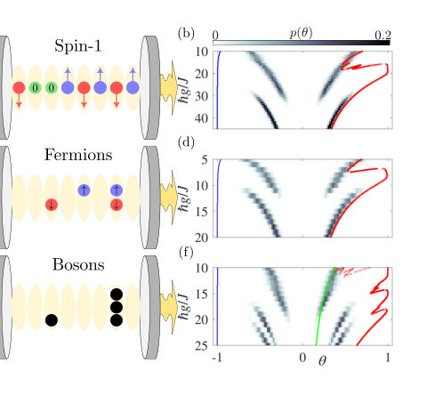
<figcaption class="paper-figure-caption"><b>Fig 1.</b> FIG. 1: Sketch of (a) the spin-1 system, (c) spinful fermions, and (e) spinless bosons interacting with a cavity. Distribu- tions p(θ) obtained from DSRE are displayed in panels (b), (d), and (f) for spin-1, fermions, and bosons, respectively. We used the parameters (b) U0 = 30J, ℏδ = 10J, ℏΓ = 3J, L = 224, total magnetization P</figcaption>
</figure>
<figure class="paper-figure-card">
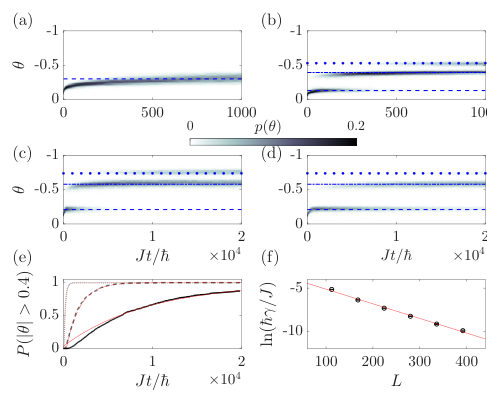
<figcaption class="paper-figure-caption"><b>Fig 2.</b> FIG. 2: (a)-(d) Time evolution of p(θ) (bosons) for four pa- rameter sets: (a) L = 224, ℏg = 14J, (b) L = 224, ℏg = 22J, (c) L = 224, ℏg = 18J, and (d) L = 336, ℏg = 18J. Guide to the eye: blue dashed lines in (a),(b),(c),(d) indicate positions of first peak, dashed-dotted line in (b),(c),(d) second peak and the dotted line in (b),(c),(d) third peak. (e) Probability P(|θ| &gt; 0.4) as function of time for atom numbers L = 112 (light gray), L = 224 (dark gray), and L = 336 (black) at ℏg = 18J. The red curves are fits 1 −exp(−γt). (f) Growth rate γ, extracted from the fits in panel (e), plotted as a func- tion of N. The red line is a linear fit to log(ℏγ/J). Remaining parameters are U0 = 40J, ℏδ...</figcaption>
</figure>
<figure class="paper-figure-card">
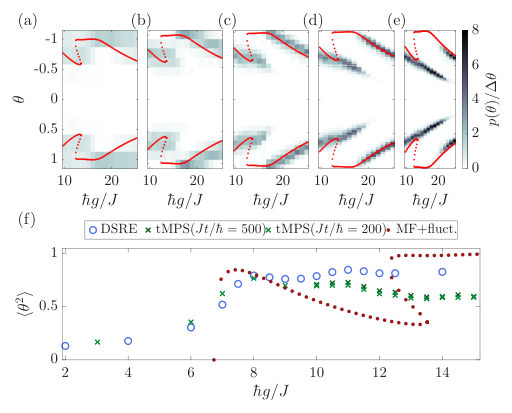
<figcaption class="paper-figure-caption"><b>Fig 3.</b> FIG. 3: (a)-(e) Probability density p(θ) after a time Jt/ℏ= 2 × 104 as function g for (a) L = 14, (b) L = 28 (c) L = 56 (d) L = 112 (e) L = 224 for bosons with Nmax = 2. Red dots show the solution of MF+fluct.. (f) Expectation value ⟨θ2⟩ extracted from the steady state of Eq. (7) (blue circles), tMPS simulations for L = 14 (dark green crosses Jt/ℏ= 500, light green crosses Jt/ℏ= 200), and MF+fluct. in red. Remaining parameters are U0 = 40J, ℏδ = 10J, ℏΓ = 3J, N = L/2.</figcaption>
</figure>
<figure class="paper-figure-card">
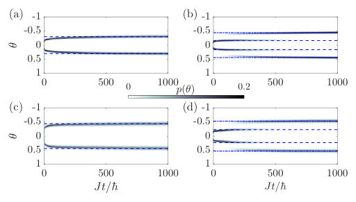
<figcaption class="paper-figure-caption"><b>Fig 4.</b> FIG. 2: (a)-(d) Time evolution of p(θ) for spins (a),(b) and Fermions (c), (d) obtained from the DSRE method. The pa- rameters are (a) ℏg/J = 25, (b) ℏg/J = 35, (c) ℏg/J = 8, and (d) ℏg/J = 13. The remaining parameters for (a) and (b): U0 = 30J, ℏδ = 10J, ℏΓ = 3J, L = 224, total magnetization P</figcaption>
</figure>
<figure class="paper-figure-card">
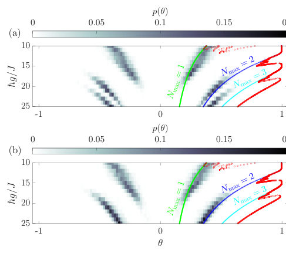
<figcaption class="paper-figure-caption"><b>Fig 5.</b> FIG. 1: Results for p(θ) as a function of g and θ obtained with the DSRE method are shown as shaded regions for the onsite boson-number cutoff (a) Nmax = N and (b) Nmax = 2. The DSRE results shown in (a) are identical to those presented in Fig. 1(f) of the main text. The parameters are U0 = 40J, ℏδ = 5J, ℏΓ = 3J, L = 224, and half filling, N = L/2. The colored lines show |θth| obtained using the MF+fluct. method for a system size of L = 8. The green, blue, and cyan curves correspond to onsite boson-number cutoffs of Nmax = 1, Nmax = 2, and Nmax = 3, respectively.</figcaption>
</figure>
</div>

<p><strong>Summary.</strong> This paper establishes that fluctuation-induced bistability is a universal feature of dissipative cavity-coupled many-body systems. The authors use advanced rate equation methods (DSRE) and compare them with tensor network simulations to map out the non-equilibrium dynamics. It provides a general theoretical tool for analyzing complex quantum phenomena in hybrid light-matter platforms.</p>
<p><strong>Why it may be interesting.</strong> This work provides a general theoretical framework for understanding emergent non-linear dynamics (bistability) in open quantum systems, which is highly relevant to cavity QED and superconducting circuit research where dissipation plays a crucial role.</p>
<details>
<summary>Detailed structure</summary>
<p><strong>Main problem.</strong> The paper investigates fluctuation-induced bistability, demonstrating that this phenomenon is a robust and generic feature in strongly interacting many-body systems coupled to dissipative cavities.</p>
<p><strong>Main result.</strong> Bistability is shown to be universal across various models (spins, fermions, bosons) due to resonances between photon transitions and many-body energy scales. The dynamics are studied using advanced rate equation approaches that capture non-equilibrium behavior.</p>
<p><strong>Method.</strong> The authors employ complementary theoretical frameworks, including the Dressed-State Rate Equation (DSRE) approach derived via Mori-Zwanzig formalism, and compare results with numerically exact tensor-network simulations (tMPS).</p>
<p><strong>Model / system.</strong> The system models generic cavity-matter quantum interactions, encompassing interacting spins (XX model), fermions (Fermi-Hubbard), and bosons (Bose-Hubbard) coupled to a dissipative photonic mode governed by a Lindblad master equation.</p>
<p><strong>Key observables.</strong> Probability distribution $p(	heta)$ of the imbalance $  heta$, steady-state properties, and time evolution of observables like $\langle	heta^2
angle$ and coherence ($C_2$).</p>
<p><strong>Important parameters / regimes.</strong> Strong coupling regime ($U/J, \hbar g/J \gg 1$), system size dependence (bistability emerges for large $L$), and local Hilbert-space cutoff ($N_{\max}$).</p>
<p><strong>Assumptions / limitations.</strong> The DSRE approach involves approximations like neglecting coherences between degenerate eigenstates or truncating the hierarchy of equations; MF+fluct. assumes rapid thermalization.</p>
<p><strong>Figures summary.</strong> Figures illustrate $p(	heta)$ for different systems and cutoffs, showing bistability regions. Other figures track time evolution of observables ($\langle	heta^2
angle$, etc.) using tMPS, confirming slow dynamics in the bistable regime.</p>
<p><strong>Paper structure.</strong> The paper first establishes the problem by defining the Hamiltonian and master equation. It then develops and applies the DSRE method to analyze steady-state properties and show the universality of bistability across different particle types. Finally, it validates these findings by comparing results with tMPS simulations tracking non-equilibrium time evolution.</p>
</details>
<details>
<summary>Abstract</summary>
<p>We demonstrate that fluctuation-induced bistability is a robust and generic phenomenon in strongly interacting many-body systems with strong light-matter coupling. We identify a common microscopic mechanism based on resonances between photonic transitions and many-body energy scales, unifying the emergence of fluctuation-induced bistability across a broad class of models, including interacting spins, fermions, and bosons coupled to cavity modes. We develop complementary methods to study both the steady-state properties of fluctuation-induced bistability and its dynamical formation at finite times. In particular, we introduce the dressed-state rate equation approach, which reveals rich metastable dynamics and enables the investigation of its system-size dependence. By comparing its predictions with numerically-exact tensor-network simulations, we identify signatures of fluctuation-induced bistability already in small systems on finite timescales. Our results establish fluctuation-induced bistability as a universal feature of dissipative cavity-coupled many-body systems and provide a general framework for the investigation of its non-equilibrium dynamics across a wide range of hybrid quantum platforms.</p>
</details>
<p><sub><a href="#top">↑ back to top</a></sub></p>

<p><a id="paper-2607.21073"></a></p>
<h3 id="vacuum-induced-interference-in-light-scattering-by-multilevel-atomic-chains">⭐ <a href="http://arxiv.org/abs/2607.21073v1">Vacuum-induced interference in light scattering by multilevel atomic chains</a></h3>
<p><strong>Highlighted author(s):</strong> Giovanna Morigi<br>
<strong>Authors:</strong> Aleksei Konovalov, Giovanna Morigi, Nicola Piovella<br>
<strong>Type:</strong> theory · <strong>Category:</strong> other · <strong>PDF:</strong> <a href="https://arxiv.org/pdf/2607.21073v1">https://arxiv.org/pdf/2607.21073v1</a><br>
<strong>Analysis basis:</strong> full PDF text, analyzed in chunks
<strong>Topic relevance:</strong> 🔥 <code>analog quantum simulation</code> <strong>4/5</strong> · 🔥 <code>correlated / nonlocal dissipation</code> <strong>4/5</strong> · 🔥 <code>interference shaping light</code> <strong>4/5</strong> · <code>Dicke superradiance</code> <strong>3/5</strong> · <code>free-space correlated emission</code> <strong>3/5</strong> · <code>methods for driven-dissipative</code> <strong>3/5</strong> · <code>superradiant laser</code> <strong>3/5</strong> · <code>Tavis-Cummings &amp; cavity-many-emitter</code> <strong>2/5</strong> · <code>driven-dissipative phase transition</code> <strong>2/5</strong> · <code>non-equilibrium dynamics</code> <strong>2/5</strong> · <code>Frenkel-Kontorova</code> <strong>1/5</strong> · <code>Keldysh / 2PI / non-Gaussian methods</code> <strong>1/5</strong> · <code>correlated cavity matter</code> <strong>1/5</strong> · <code>entanglement &amp; information structure</code> <strong>1/5</strong> · <code>non-equilibrium universality</code> <strong>1/5</strong></p>
<div class="figure-strip-hint">↔ Scroll figures horizontally</div>
<div class="paper-figures-scroll">
<figure class="paper-figure-card">
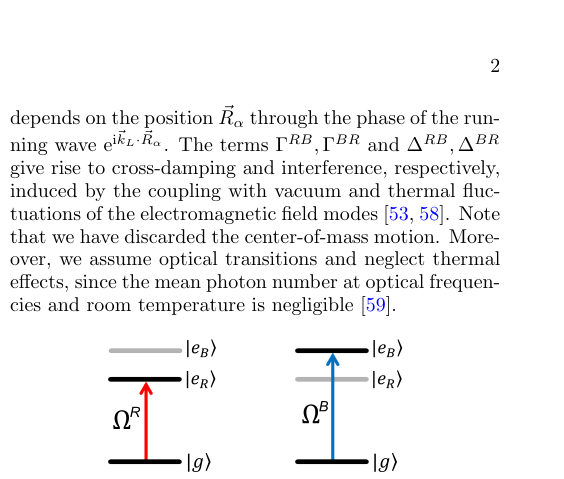
<figcaption class="paper-figure-caption"><b>Fig 1.</b> FIG. 1. Relevant level scheme of each emitter. The colored arrows denote only dipolar transitions which are involved in the excitation process, here labeled by the Rabi frequency multiplied by the corresponding Clebsch-Gordon coefficient. Both dipolar transition are parallel and thus couple with the same modes of the electromagnetic field. Hence, spontaneous decay processes from the excited states can interfere. In this work we assess the magnitude of this interference on coherent scattering when the emitters form a chain.</figcaption>
</figure>
<figure class="paper-figure-card">
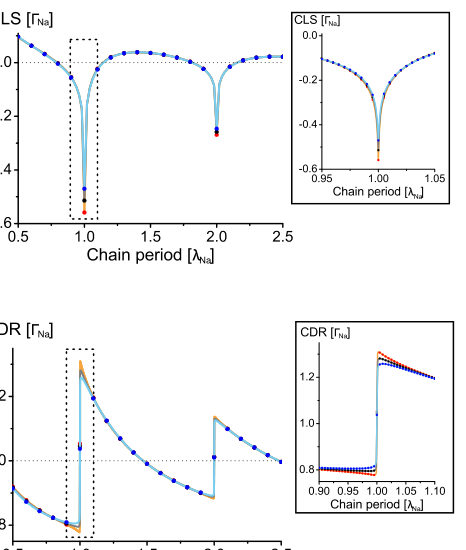
<figcaption class="paper-figure-caption"><b>Fig 2.</b> FIG. 3. Onset: a) Line shift Λi (CLS) and b) decay rate γi (CDR) as functions of the chain period and in units of Γ. The dots are the results of numerical integration of the excitation spectra for a chain of N = 1000 three-level emit- ters with the parameters of 23Na and fitting using (19). The orange and cyan lines are the analytical results for the R- and B-transitions, respectively, as in Sec. III 2. For refer- ence, the grey line shows the result when the cross-interference terms are set to zero in the model. It significantly overlaps with the predictions of the full model, except at periodicity a ≃λ, 2λ. The insets display zooms into the region inside the corresponding box of the...</figcaption>
</figure>
<figure class="paper-figure-card">
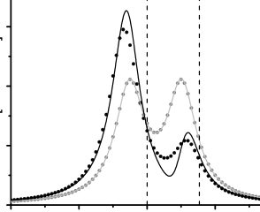
<figcaption class="paper-figure-caption"><b>Fig 3.</b> FIG. 2. The black dots are the photon-count signal, Eq. (3), vs laser detuning for a chain of N = 1000 emitters consisting of two parallel dipoles with the parameters of (a) 23Na and (b) 7Li D2 line. The interparticle distance is a = λ, with λ the wavelength of the optical transition. Vertical dashed lines indicate the bare transition frequencies, the laser detun- ing is defined with respect to the lower-frequency transition. Solid lines correspond to the result in perturbation theory in ϵ the grey solid line is found by setting all cross interference terms to zero (S(0) R + S(0) B , see Eq. (17)). The grey dots are the results of a simulation of the chain by setting artificially GRB = 0 in...</figcaption>
</figure>
<figure class="paper-figure-card">
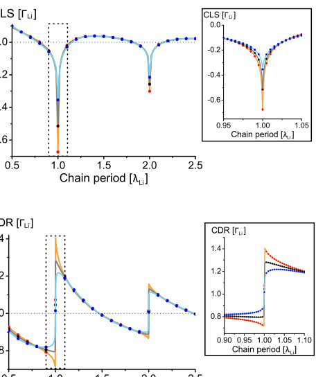
<figcaption class="paper-figure-caption"><b>Fig 4.</b> FIG. 4. Same as Fig.3 but for the parameters of 7Li.</figcaption>
</figure>
<figure class="paper-figure-card">
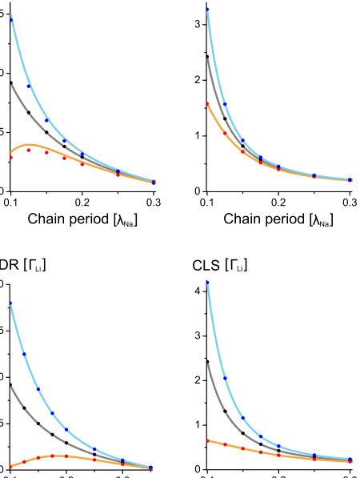
<figcaption class="paper-figure-caption"><b>Fig 5.</b> FIG. 5. CLR and CLS for the parameters of (a) Sodium and (b) Lithium and a &lt; λ/2. The parameters and legenda are the same as in Figs. 3 and 4.</figcaption>
</figure>
</div>

<p><strong>Summary.</strong> This paper theoretically analyzes how vacuum fluctuations induce interference effects—cross-damping and cross-shifts—when light scatters from an ordered chain of multilevel atoms. By modeling the system using coupled dipole equations, the authors predict that these collective interference terms manifest as measurable shifts and changes in linewidths within the excitation spectrum. The findings are significant for understanding quantum light-matter interactions in structured atomic media.</p>
<p><strong>Why it may be interesting.</strong> This work directly addresses open quantum systems dynamics in structured media, providing quantitative predictions for collective effects (superradiance, cross-damping) that are sensitive to spatial arrangement, which is a key area in quantum optics.</p>
<details>
<summary>Detailed structure</summary>
<p><strong>Main problem.</strong> The study investigates vacuum-induced interference effects, specifically cross-damping and cross-shifts, that modify light scattering dynamics in ordered chains of multilevel atoms.</p>
<p><strong>Main result.</strong> The interplay between multilevel interference and superradiance can lead to measurable spectral modifications (linewidths and shifts) in alkali-metal atomic chains when spatial periodicity is considered.</p>
<p><strong>Method.</strong> The authors use the Model of Coupled Coherent Dipoles (MCD), solving equations derived from a master equation, and employing perturbation theory for the excitation spectrum analysis.</p>
<p><strong>Model / system.</strong> The system is an ordered 1D array of multilevel quantum emitters, each with two quasi-resonant transitions. The dynamics are governed by coupled coherence equations incorporating interatomic coupling via Green's functions.</p>
<p><strong>Key observables.</strong> Photon-count signal (excitation spectrum) $S_{\Omega}(\delta L)$, linewidth ($ ext{CDR}$), and line shift ($  ext{CLS}$).</p>
<p><strong>Important parameters / regimes.</strong> Weak saturation regime ($N\Omega_i \ll |\dots|$); chain periodicity ($a$); energy gap ($\delta\omega$).</p>
<p><strong>Assumptions / limitations.</strong> The analysis initially simplifies the system by setting inter-emitter coupling terms $\Gamma_{i
eq j} = 0$ and $\Delta_{i
eq j} = 0$ to isolate spatial periodicity effects, although this is noted as an approximation.</p>
<p><strong>Figures summary.</strong> Figures compare numerical photon-count signals for Na and Li atoms against mean-field theory at different orders of perturbation ($\epsilon$). Other figures show the dependence of $  ext{CLS}$ and $ ext{CDR}$ on chain period $a$, highlighting cross-interference contributions.</p>
<p><strong>Paper structure.</strong> The paper introduces the MCD, provides an analytical solution for a general three-level system, analyzes excitation spectra numerically, and finally examines the robustness against atomic vibrations.</p>
</details>
<details>
<summary>Abstract</summary>
<p>We investigate cooperative light scattering by an ordered chain of multilevel atoms, which possess two quasi-resonant transitions with parallel dipole moments. Interference between dipole transitions induced by coupling with the vacuum gives rise to so called cross-damping and cross-shifts, that modify the incoherent and coherent dynamics and can be manifest in the spectroscopic properties of the emitted light. We determine the excitation spectrum when the atomic chain is driven by an external laser in the limit in which the dipolar transitions can be described by harmonic oscillators and the scattering is coherent. We show that the interplay of multilevel interference and superradiance can give rise to measurable effects in chains of alkali-metal atoms.</p>
</details>
<p><sub><a href="#top">↑ back to top</a></sub></p>

<p><a id="paper-2607.21360"></a></p>
<h3 id="floquet-reservoir-engineering-for-remote-logical-entanglement">⭐ <a href="http://arxiv.org/abs/2607.21360v1">Floquet Reservoir Engineering for Remote Logical Entanglement</a></h3>
<p><strong>Highlighted author(s):</strong> Aashish A. Clerk<br>
<strong>Authors:</strong> Mingxing Yao, Aashish A. Clerk<br>
<strong>Type:</strong> both · <strong>Category:</strong> quantum information and computing · <strong>PDF:</strong> <a href="https://arxiv.org/pdf/2607.21360v1">https://arxiv.org/pdf/2607.21360v1</a><br>
<strong>Analysis basis:</strong> full PDF text, analyzed in chunks
<strong>Topic relevance:</strong> 🔥 <code>correlated / nonlocal dissipation</code> <strong>4/5</strong> · 🔥 <code>non-equilibrium dynamics</code> <strong>4/5</strong> · <code>driven-dissipative phase transition</code> <strong>3/5</strong> · <code>entanglement &amp; information structure</code> <strong>3/5</strong> · <code>methods for driven-dissipative</code> <strong>3/5</strong> · <code>QC/QI experiment</code> <strong>2/5</strong> · <code>non-equilibrium universality</code> <strong>2/5</strong> · <code>quantum measurements</code> <strong>2/5</strong> · <code>Keldysh / 2PI / non-Gaussian methods</code> <strong>1/5</strong> · <code>analog quantum simulation</code> <strong>1/5</strong> · <code>measurement-induced transitions</code> <strong>1/5</strong> · <code>quantum optics experiment</code> <strong>1/5</strong></p>
<div class="figure-strip-hint">↔ Scroll figures horizontally</div>
<div class="paper-figures-scroll">
<figure class="paper-figure-card">
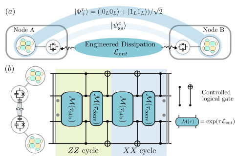
<figcaption class="paper-figure-caption"><b>Fig 1.</b> FIG. 1. Floquet reservoir engineering to stabilize re- mote logical Bell states (a) Two remote computational nodes (A and B) each consist of a logical qubit (depicted as a surface code patch) and a communication qubit (repre- sented by a transmon). The communication qubits are cou- pled via an engineered entangling dissipative bath Lent. (b) Circuit description of one period of the protocol: entangling engineered dissipation acts continuously on the communica- tion qubits, interspersed with fast controlled unitary gates. The gates partition the dissipation into finite-time channels M(τ) ≡exp(τLent).</figcaption>
</figure>
<figure class="paper-figure-card">
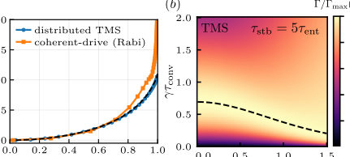
<figcaption class="paper-figure-caption"><b>Fig 2.</b> FIG. 2. Optimized rate for stabilizing logical Bell state. (a) Maximized dimensionless logical stabilization rate Γmax as a function of the communication qubit’s steady-state |ψc ss⟩concurrence Cc[v], for both the TMS and Rabi-drive en- tangling reservoirs. Dashed line: analytic result for the TMS scheme. (b) Normalized logical stabilization rate Γ/Γmax(r) for the TMS scheme, as a function of the conversion time γτconv and the squeezing parameter r at fixed preparation time τstb = 5τent. The dashed curve marks the analytical op- timal γτ ∗ conv.</figcaption>
</figure>
<figure class="paper-figure-card">
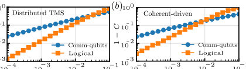
<figcaption class="paper-figure-caption"><b>Fig 3.</b> FIG. 3. Optimal steady-state concurrence error 1 −C versus waveguide loss ϵ for communication-qubit-only stabilization via Lent (blue circles), and the full logical Floquet protocol (orange squares). The two panels are for the TMS and Rabi schemes, with (τstb, τconv) optimized at each ϵ. Both Flo- quet protocols exhibit linear scaling in the small-loss regime whereas communication-qubit-only stabilization scales sub- linearly ∼ϵ1/2. Below ϵ ∼10−2 the logical protocol out- performs the Lent-only protocol.</figcaption>
</figure>
<figure class="paper-figure-card">
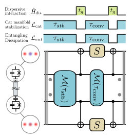
<figcaption class="paper-figure-caption"><b>Fig 4.</b> FIG. 4. Stabilization of remote cat-qubit Bell state. Pulse sequence (top) and circuit diagram (bottom) for one stabilization cycle, using the Rabi-driven entangling reservoir Lent [Eq. (10)]. Within a cycle, Lent is activated on the trans- mons for two time intervals (τstb, τconv), interleaved with dis- persive CNOT gates of duration tg and single-photon-driven cat phase gates S; the two-photon cat stabilization Lcat acts continuously to protect the logical states.</figcaption>
</figure>
<figure class="paper-figure-card">
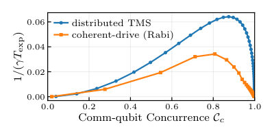
<figcaption class="paper-figure-caption"><b>Fig 5.</b> FIG. 6. Typical protocol run time Texp as a function of the communication-qubit entanglement. The non- monotonic dependence yields a clear optimum, set by the tradeoff between larger conversion rate pconv and slower sta- bilization τent as the entanglement increases.</figcaption>
</figure>
</div>

<p><strong>Summary.</strong> The paper introduces dissipative Floquet protocols to stabilize remote logical entanglement between qubits. By interleaving controlled unitaries with continuous engineered dissipation, the system autonomously performs entanglement distillation, achieving high fidelity even in the presence of waveguide loss. This offers a powerful pathway for quantum networking that bypasses the need for explicit measurements.</p>
<p><strong>Why it may be interesting.</strong> This work provides a concrete, experimentally relevant framework for quantum networking by showing how dissipation itself can be engineered to perform complex tasks like entanglement distillation, bypassing limitations of standard unitary protocols.</p>
<details>
<summary>Detailed structure</summary>
<p><strong>Main problem.</strong> The goal is to deterministically stabilize remote logical entanglement between qubits using non-unitary, dissipative protocols that mimic measurement-plus-feedback without requiring explicit classical communication.</p>
<p><strong>Main result.</strong> The proposed Floquet reservoir engineering protocol autonomously acts as an entanglement distillation engine, achieving steady-state stabilization of the Bell state and demonstrating error scaling proportional to waveguide loss ($\propto \epsilon$).</p>
<p><strong>Method.</strong> The method involves interleaving continuous engineered dissipation (Lindblad dynamics) with periodic fast unitary gates within a Floquet cycle ($E = E_{ZZ} \circ E_{XX}$) to drive the system toward an entangled steady state.</p>
<p><strong>Model / system.</strong> The physical realization uses two remote nodes, each containing logical qubits protected by encoding schemes like cat or GKP states. The coupling is mediated by a dissipative reservoir (waveguide) described by a Lindblad master equation.</p>
<p><strong>Key observables.</strong> Steady-state concurrence ($C$), entanglement fidelity, and the scaling of the steady-state error ($1-C$) with loss ($\epsilon$).</p>
<p><strong>Important parameters / regimes.</strong> Dissipation rates ($\gamma$), time scales ($  au_{stb},   au_{conv}$), waveguide loss parameter ($\epsilon$), and squeezing/squeezing parameters ($r$ or $\Delta$).</p>
<p><strong>Assumptions / limitations.</strong> The protocol assumes the ability to implement fast, controlled unitary gates (e.g., CZ) and relies on analyzing the system dynamics via perturbation theory in the weak-loss limit.</p>
<p><strong>Figures summary.</strong> Figures illustrate the setup showing two remote nodes coupled by an engineered dissipative bath; one figure shows the stabilization rate vs. loss $\epsilon$, and another plots logical steady-state entanglement $C$ versus squeezing parameter $r$.</p>
<p><strong>Paper structure.</strong> The paper introduces the concept of dissipative Floquet protocols, details the EZZ subroutine for parity encoding/transduction, analyzes the convergence rate via correlator evolution equations, and concludes with error scaling analysis under weak loss ($\epsilon$).</p>
</details>
<details>
<summary>Abstract</summary>
<p>Implementing controlled dissipative dynamics is a powerful approach for state preparation in a variety of contexts, including the preparation of remote entangled states. Here, we show that by going beyond the standard setting of time-independent dissipative dynamics, one can realize even more powerful non-unitary protocols. We introduce dissipative Floquet protocols for stabilizing remote entanglement of logical qubits, where continuously-running dissipation is interleaved with a periodic sequence of unitary gates. These protocols harness existing experimental capabilities, and overcome time-entanglement limits that constrain standard approaches. They also implement an autonomous form of entanglement distillation. We show how these protocols give enhanced protection against waveguide loss, and as an example, analyze a specific implementation using cat-qubits and transmons in a superconducting circuit.</p>
</details>
<p><sub><a href="#top">↑ back to top</a></sub></p>

<p><a id="paper-2607.21554"></a></p>
<h3 id="strategic-plan-for-neutral-atom-quantum-computation">⭐ <a href="http://arxiv.org/abs/2607.21554v1">Strategic Plan for Neutral Atom Quantum Computation</a></h3>
<p><strong>Highlighted author(s):</strong> Antoine Browaeys, Mikhail D. Lukin, Vladan Vuletic, Susanne Yelin, Vladan Vuletic, Susanne Yelin<br>
<strong>Authors:</strong> Adrian J. Menssen, Tout Wang, Michael Gullans, Tom Manovitz, Jacob M. Taylor, Jason Cong, Josiah Sinclair, Ziv Aqua, Daniel J. Blumenthal, J. Pablo Bonilla Ataides, Johannes Borregaard, Antoine Browaeys, Paola Cappellaro, Soonwon Choi, Alexandre Cooper, Robin Côté, Jacob P. Covey, Alexandre Dauphin, Ivana Dimitrova, Matt Eichenfield, Dirk Englund, Jacob Freedman, Akihisa Goban, Brandon Grinkemeyer, Andi Gu, Ruonan Han, Dominik Hangleiter, Aram W. Harrow, Liang Jiang, Eun-ah Kim, Felix W. Knollmann, Aleksander Kubica, Thierry Lahaye, Lucas Lassabliere, Joonho Lee, Bingzhao Li, Mo Li, Wan-Hsuan Lin, Mikhail D. Lukin, Varun Menon, Thomas Propson, Akbar Safari, Mark Saffman, Pascal Scholl, Alexander Schuckert, Giulia Semeghini, Jonathan Simon, David Spierings, Daniel Bochen Tan, Shai Tsesses, Vladan Vuletic, Hanrui Wang, Hanyu Wang, Susanne Yelin, Johannes Zeiher, Hengyun Zhouckert, Giulia Semeghini, Jonathan Simon, David Spierings, Daniel Bochen Tan, Shai Tsesses, Vladan Vuletic, Hanrui Wang, Hanyu Wang, Susanne Yelin, Johannes Zeiher, Hengyun Zhou<br>
<strong>Type:</strong> both · <strong>Category:</strong> quantum information and computing · <strong>PDF:</strong> <a href="https://arxiv.org/pdf/2607.21554v1">https://arxiv.org/pdf/2607.21554v1</a><br>
<strong>Analysis basis:</strong> full PDF text, analyzed in chunks
<strong>Topic relevance:</strong> 🔥 <code>QC/QI experiment</code> <strong>4/5</strong> · 🔥 <code>Rydberg arrays</code> <strong>4/5</strong> · <code>analog quantum simulation</code> <strong>3/5</strong> · <code>entanglement &amp; information structure</code> <strong>2/5</strong> · <code>correlated cavity matter</code> <strong>1/5</strong> · <code>non-equilibrium dynamics</code> <strong>1/5</strong> · <code>quantum optics experiment</code> <strong>1/5</strong></p>
<div class="figure-strip-hint">↔ Scroll figures horizontally</div>
<div class="paper-figures-scroll">
<figure class="paper-figure-card">
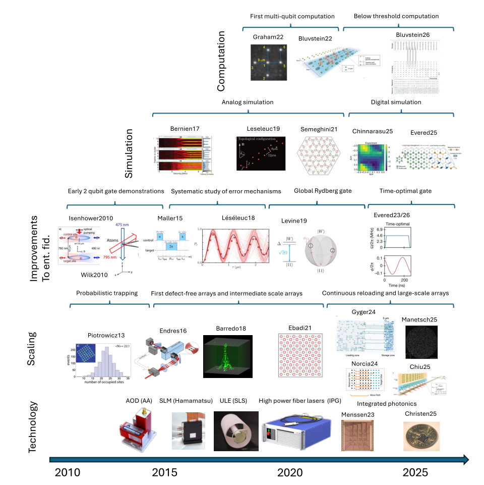
<figcaption class="paper-figure-caption"><b>Fig 1.</b> Figure 1: Overview of the evolution of neutral atom quantum computation. Neutral-atom efforts are shown along five categories-Computation, Simulation, Improvements to entangle- ment fidelity, Scaling, and Technology stack-with representative papers. Computation: first multi-qubit computation [4, 7] →below-threshold computation [600]. Simulation: analog Rydberg simulators [8, 9, 28] →digital simulation [10, 11]. Improvements to entangle- ment fidelity: early two-qubit gate demonstrations [12, 13] →systematic study of error mechanisms [14, 15] →global Rydberg gate [16] time-optimal gate [1, 3]. Scaling: proba- bilistic trapping [17] →first defect-free and intermediate-scale arrays [18–20]...</figcaption>
</figure>
<figure class="paper-figure-card">
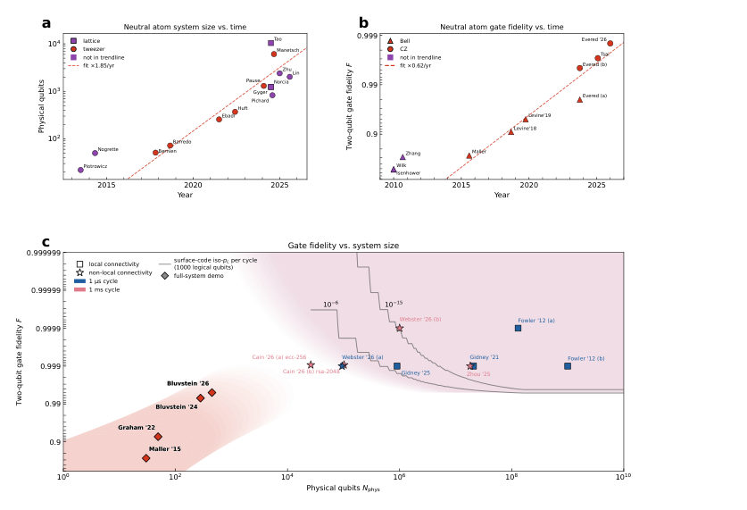
<figcaption class="paper-figure-caption"><b>Fig 2.</b> Figure 2: Plot of scaling trends, best in class results. (a) Trends for qubit number over time. Fit through current tweezer architecture data-points, early pioneering results were excluded from the trend-line. Optical lattice architectures are shown, but not included in the trend-line. Several tweezer architectures close to best in class are shown but not fitted. (b) Two-qubit fidelity improvement over time. Early pioneering work not included in trend- line. (c) Advancing fronts of experimental and theoretical progress in fidelity vs. physical qubit space. Shaded regions indicate experimental (lower left) and theoretical advances (upper right). Full-system experimental demonstrations and...</figcaption>
</figure>
<figure class="paper-figure-card">
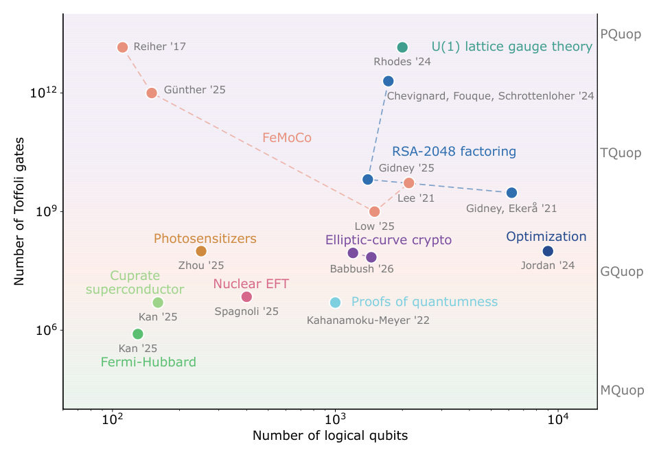
<figcaption class="paper-figure-caption"><b>Fig 3.</b> Figure 3: Examples of explicit resource estimates for key applications. Each marker is an explicit resource estimate in terms of number of logical qubits and Toffoli or T gates (using 1 Toffoli = 7 T gates). The right vertical axis restates that count in Quops: one Quop is an operation that can be performed within one syndrome extraction cycle. The maximum Quop count of a QEC code is therefore roughly its inverse logical error rate per logical qubit. The Toffoli count is a lower bound on the Quop count and the exact overhead (roughly 10 to 100, depending on the Clifford count per Toffoli and on the magic-state factory) is architecture-dependent. To give a rough impression for the quop...</figcaption>
</figure>
<figure class="paper-figure-card">
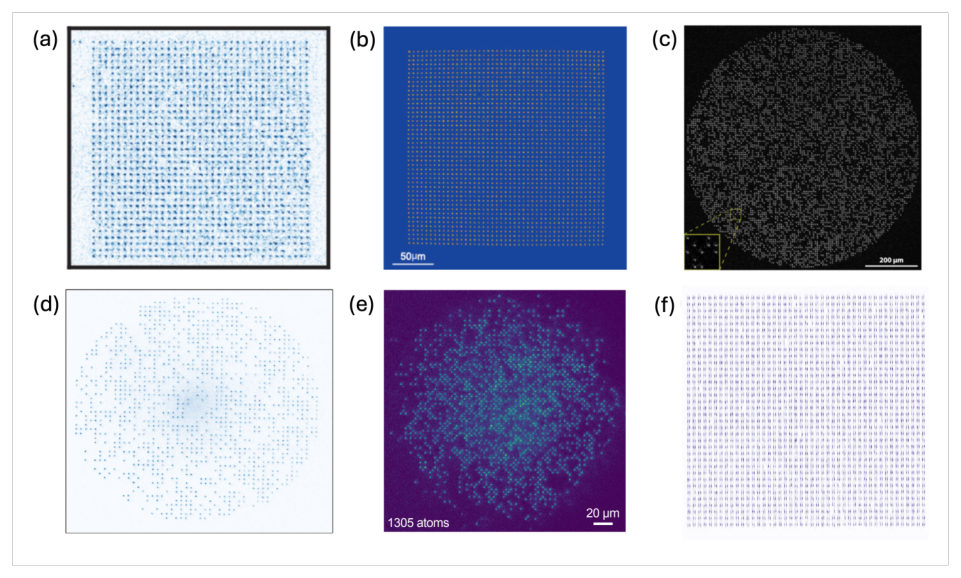
<figcaption class="paper-figure-caption"><b>Fig 4.</b> Figure 4: Arrays of thousands of neutral atom qubits: (a) Atom Computing &gt;1200 171Yb atoms [33], (b) Jian-Wei Pan group (USTC) &gt;2000 87Rb atoms [34], (c) Endres group (Cal- tech) &gt;6100 133Cs atoms [22], (d) Pasqal &gt;1100 87Rb atoms [32], (e) Birkl group (TU Darm- stadt) &gt;1300 85Rb atoms [30], and (f) Lukin group (Harvard) &gt;3200 87Rb atoms [23].</figcaption>
</figure>
<figure class="paper-figure-card">
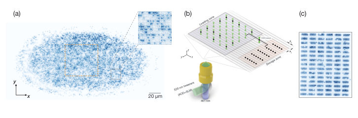
<figcaption class="paper-figure-caption"><b>Fig 5.</b> Figure 5: Lattice arrays for scaling quantum registers. (a) Using a single, strongly elliptical folded beam allows to create regular trap arrays with more than 25.000 lattice sites that can be loaded from a magneto-optical trap and imaged with high fidelity and low loss [31]. (b) Zone-based architecture in a lattice array, where a loading-zone is iteratively loaded from a magneto-optical trap, whereas atoms in the storage zone are protected by shelving in a metastable state. (c) Ordered array of close to 1000 atoms in an optical lattice.</figcaption>
</figure>
</div>

<p><strong>Summary.</strong> This paper presents a comprehensive strategic plan detailing how neutral atom platforms can achieve practical quantum advantage. It synthesizes current experimental achievements in scaling and fidelity with necessary theoretical breakthroughs in error correction and networking. The work is crucial for guiding future research efforts toward building large-scale, fault-tolerant quantum computers.</p>
<p><strong>Why it may be interesting.</strong> It provides a high-level synthesis connecting fundamental AMO physics (Rydberg interactions) directly to the engineering challenges of fault-tolerant quantum computation and scalable quantum networks.</p>
<details>
<summary>Detailed structure</summary>
<p><strong>Main problem.</strong> The central goal is developing a comprehensive, scalable roadmap for neutral atom quantum computation to achieve practical quantum advantage.</p>
<p><strong>Main result.</strong> The paper outlines necessary advancements across hardware scaling, error correction theory, integrated photonics control, and networking to realize utility beyond the NISQ regime.</p>
<p><strong>Method.</strong> It synthesizes theoretical proposals (e.g., QEC codes) with experimental progress reports on physical platforms, presenting a multi-faceted strategic plan.</p>
<p><strong>Model / system.</strong> The primary system is neutral atoms trapped using optical tweezers or lattices, leveraging Rydberg interactions for gates and integrating photonic control elements for scalability and networking.</p>
<p><strong>Key observables.</strong> Gate fidelity, system size scaling (qubit count), error rates, entanglement generation rate, and computational advantage metrics.</p>
<p><strong>Important parameters / regimes.</strong> The convergence of hardware capability with theoretical resource requirements is key; achieving low error rates ($10^{-6}$ to $10^{-15}$) at large scales is critical.</p>
<p><strong>Assumptions / limitations.</strong> It assumes that continued engineering progress in integrated photonics and atomic control will bridge the gap between current state-of-the-art devices and fault-tolerant computation requirements.</p>
<p><strong>Figures summary.</strong> Figures illustrate the evolution of neutral atom quantum computing across five dimensions: Computation, Simulation, Entanglement Fidelity Improvement, Scaling, and Technology Stack, showing projected progress over time.</p>
<p><strong>Paper structure.</strong> The paper is structured as a strategic roadmap covering defining practical advantage, detailing hardware scaling (qubit arrays, control), proposing theoretical advances (QEC/Compilation), and finally addressing networking for distributed computing.</p>
</details>
<details>
<summary>Abstract</summary>
<p>We present a strategic plan for neutral atom quantum computation, bringing together hardware development and theory advancements to achieve the goal of practical quantum advantage. The concept of practical quantum advantage is defined, along with how to verify claims of advantage, and approaches to designing quantum algorithms that deliver practical advantage. Future directions for neutral atom quantum processor hardware are described: scaling-up system size, Qubit encodings and atomic platforms, going further below threshold with neutral-atom logical-qubit performance, continuous reloading of qubits, and fast readout. We also explore opportunities for scalable integrated photonic control technologies. Alongside hardware advancements, new developments in quantum error correction and compilation of quantum circuits are proposed. Finally, we examine the opportunity of networking multiple neutral atom quantum processors together to perform distributed quantum computing and overcome possible limitations of a single system.</p>
</details>
<p><sub><a href="#top">↑ back to top</a></sub></p>

<p><a id="paper-2607.20905"></a></p>
<h3 id="multicritical-dissipative-phase-transitions-manipulated-by-dipole-dipole-interactions"><a href="http://arxiv.org/abs/2607.20905v1">Multicritical dissipative phase transitions manipulated by dipole--dipole interactions</a></h3>
<p><strong>Authors:</strong> Jia-Xin Wang, Qian Bin, Jing-Jing Cao, Xin-You Lü<br>
<strong>Type:</strong> theory · <strong>Category:</strong> other · <strong>PDF:</strong> <a href="https://arxiv.org/pdf/2607.20905v1">https://arxiv.org/pdf/2607.20905v1</a><br>
<strong>Analysis basis:</strong> full PDF text, analyzed in chunks
<strong>Topic relevance:</strong> 🔥 <code>driven-dissipative phase transition</code> <strong>5/5</strong> · 🔥 <code>Tavis-Cummings &amp; cavity-many-emitter</code> <strong>4/5</strong> · 🔥 <code>analog quantum simulation</code> <strong>4/5</strong> · 🔥 <code>non-equilibrium universality</code> <strong>4/5</strong> · <code>Dicke superradiance</code> <strong>3/5</strong> · <code>Rydberg arrays</code> <strong>3/5</strong> · <code>correlated / nonlocal dissipation</code> <strong>3/5</strong> · <code>correlated cavity matter</code> <strong>3/5</strong> · <code>methods for driven-dissipative</code> <strong>3/5</strong> · <code>non-equilibrium dynamics</code> <strong>3/5</strong> · <code>superradiant laser</code> <strong>2/5</strong> · <code>Keldysh / 2PI / non-Gaussian methods</code> <strong>1/5</strong> · <code>entanglement &amp; information structure</code> <strong>1/5</strong> · <code>exotic spin models in light-matter</code> <strong>1/5</strong></p>
<div class="figure-strip-hint">↔ Scroll figures horizontally</div>
<div class="paper-figures-scroll">
<figure class="paper-figure-card">
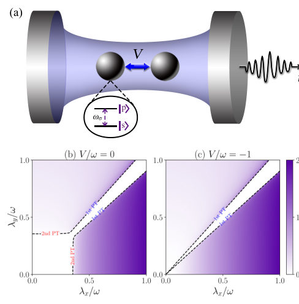
<figcaption class="paper-figure-caption"><b>Fig 1.</b> FIG. 1: (a) Schematic of the model. Two identical Rydberg atoms with levels |s⟩and |p⟩are placed inside a cavity. Here V denotes the strength of the dipole–dipole interaction between the two atoms, and κ is the cavity decay rate. (b, c) The real part of cavity field amplitude α as a function of the coupling strengths λx and λy for (b) V/ω = 0 and (c) V/ω = −1, respectively. The labels “1st PT” and “2nd PT” denote first-order and second-order phase transitions. System parameters: ωc = ωσ j = ω and κ/ω = 0.1.</figcaption>
</figure>
<figure class="paper-figure-card">
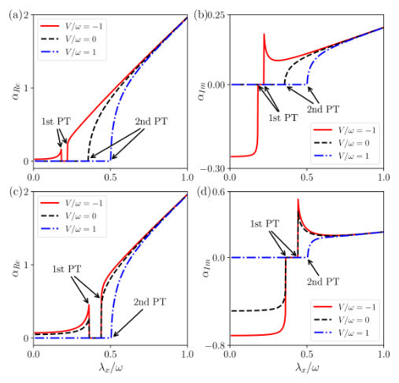
<figcaption class="paper-figure-caption"><b>Fig 2.</b> FIG. 2: (a, c) Real part αRe and (b,d) imaginary part αIm of the cavity field amplitude α versus λx for different V/ω. Red solid, black dashed, and blue dotted curves correspond to V/ω = −1, V/ω = 0 , and V/ω = 1, respectively. Black arrows mark the positions of the 1st PT and 2nd PT. System parameters: λy/ω = 0.2 for (a,b), λy/ω = 0.4 for (c,d), and the other parameters are the same as those in Figs. 1(b,c).</figcaption>
</figure>
<figure class="paper-figure-card">
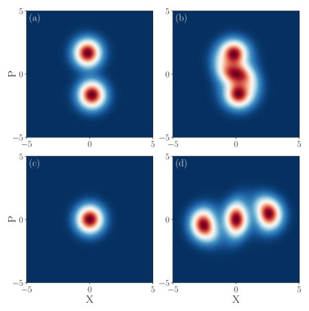
<figcaption class="paper-figure-caption"><b>Fig 3.</b> FIG. 4: Cavity-field Wigner function for V/ω = −0.5 at fixed λy/ω = 0.62 and (a) λx/ω = 0.1, (b) λx/ω = 0.388, (c) λx/ω = 0.65, (d) λx/ω = 0.95. The quadrature components of the cavity field fluc- tuations are denoted by X = √</figcaption>
</figure>
<figure class="paper-figure-card">
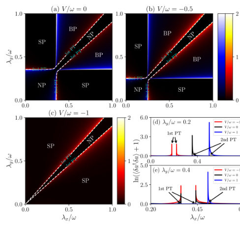
<figcaption class="paper-figure-caption"><b>Fig 4.</b> FIG. 3: Quantum fluctuations of the cavity field ln(⟨δα†δα⟩+ 1) ob- tained from the mean-field solutions as functions λx/ω and λy/ω for (a) V/ω = 0, (b) V/ω = −0.5, and (c) V/ω = −1. Blue and red re- gions correspond to the normal and superradiant phases, respectively, and their overlap indicating the bistable coexistence region. The la- bels “NP”, “SP”, and “BP” mark pure normal, pure superradiant, and bistable phases. Panels (d) and (e) show the fluctuations as a function of λx/ω for fixed λy/ω = 0.2 and λy/ω = 0.4, respectively. The other parameters are the same as those in Figs. 1(b,c).</figcaption>
</figure>
</div>

<p><strong>Summary.</strong> The paper theoretically examines superradiant phase transitions in a two-Rydberg-atom cavity QED system, focusing on the role of dipole-dipole interactions. It demonstrates that these interactions can restructure the energy landscape, causing continuous second-order transitions to vanish entirely. This mechanism allows for robust superradiance even when atom-cavity coupling is extremely weak.</p>
<p><strong>Why it may be interesting.</strong> This work directly addresses non-equilibrium quantum dynamics in cavity QED systems, showing how controllable interactions can fundamentally alter critical points, which is highly relevant for designing quantum sensors and simulators.</p>
<details>
<summary>Detailed structure</summary>
<p><strong>Main problem.</strong> The study investigates how intrinsic dipole-dipole interactions modify multicritical dissipative phase transitions occurring during superradiant phase transitions.</p>
<p><strong>Main result.</strong> Strong dipole-dipole interactions can eliminate the continuous second-order transition and its associated critical point, leaving only a first-order transition that sustains superradiance even with weak atom-cavity coupling.</p>
<p><strong>Method.</strong> The analysis employs the Heisenberg–Langevin formalism combined with mean-field approximations and subsequent quantum fluctuation analysis to determine steady states and stability boundaries.</p>
<p><strong>Model / system.</strong> The system is a cavity Quantum Electrodynamics (QED) setup involving two interacting Rydberg atoms coupled to a single cavity mode. The dynamics are governed by an effective Hamiltonian incorporating dipole-dipole interactions ($V \propto 1/R^3$).</p>
<p><strong>Key observables.</strong> Cavity field amplitude ($\alpha$), phase boundaries (first-order and second-order), and the Wigner function distribution.</p>
<p><strong>Important parameters / regimes.</strong> Dipole–dipole interaction strength ($V$), atom-cavity coupling strengths ($\lambda_{x,j}, \lambda_{y,j}$), and cavity decay rate ($\kappa$).</p>
<p><strong>Assumptions / limitations.</strong> The analysis relies on the mean-field approximation supplemented by quantum fluctuation analysis, using the Heisenberg–Langevin formalism for dynamics.</p>
<p><strong>Figures summary.</strong> Figure 1 schematically shows the model; panels (b) and (c) illustrate how varying $V/\omega$ shifts and alters the boundaries between first-order and second-order phase transitions in terms of the real part of the cavity field amplitude ($\alpha_{Re}$).</p>
<p><strong>Paper structure.</strong> The paper develops the theoretical framework using the Hamiltonian, derives mean-field equations via Langevin formalism, performs stability analysis on fluctuations to map out phase boundaries, and concludes by discussing the physical implications for quantum control.</p>
</details>
<details>
<summary>Abstract</summary>
<p>Precise control of criticality in superradiant phase transitions is essential for quantum state engineering and the simulation of nonequilibrium phase transitions. Here, we investigate theoretically multicritical phenomena in a dissipative two-Rydberg-atom cavity--QED system. The intrinisic dipole--dipole interaction between the two Rydberg atoms restructures the energy-level landscape of the atomic subsystem, thereby significantly modifying the boundary of the continuous second-order superradiant phase transition, and shifting both the phase boundary and the multicritical point toward weaker atom--cavity strengths. For sufficiently strong dipole--dipole interactions, the continuous second-order phase transition and the multicritical point both disappear, leaving only a discontinuous first--order phase transition that enables the emergence of a superradiant phase even at arbitrarily weak atom--cavity coupling. This work is of fundamental interest for studying dissipative quantum phase transitions, with potential implications for quantum precision measurement and quantum sensing.</p>
</details>
<p><sub><a href="#top">↑ back to top</a></sub></p>

<p><a id="paper-2607.21012"></a></p>
<h3 id="structured-cavity-quantum-electrodynamics"><a href="http://arxiv.org/abs/2607.21012v1">Structured Cavity Quantum Electrodynamics</a></h3>
<p><strong>Authors:</strong> Shunfa Liu, Jiantao Ma, Hanqing Liu, Yangpeng Wang, Xueshi Li, Haiqiao Ni, Zhichuan Niu, Kai Zou, Yun Meng, Xiaolong Hu, Xuehua Wang, Jin Liu<br>
<strong>Type:</strong> both · <strong>Category:</strong> other · <strong>PDF:</strong> <a href="https://arxiv.org/pdf/2607.21012v1">https://arxiv.org/pdf/2607.21012v1</a><br>
<strong>Analysis basis:</strong> full PDF text, analyzed in chunks
<strong>Topic relevance:</strong> 🔥 <code>quantum optics experiment</code> <strong>5/5</strong> · 🔥 <code>analog quantum simulation</code> <strong>4/5</strong> · 🔥 <code>exotic spin models in light-matter</code> <strong>4/5</strong> · <code>correlated cavity matter</code> <strong>3/5</strong> · <code>entanglement &amp; information structure</code> <strong>3/5</strong> · <code>interference shaping light</code> <strong>3/5</strong> · <code>spintronics-quantum-optics interface</code> <strong>3/5</strong> · <code>Tavis-Cummings &amp; cavity-many-emitter</code> <strong>2/5</strong> · <code>driven-dissipative phase transition</code> <strong>2/5</strong> · <code>QC/QI experiment</code> <strong>1/5</strong> · <code>correlated / nonlocal dissipation</code> <strong>1/5</strong> · <code>methods for driven-dissipative</code> <strong>1/5</strong> · <code>non-equilibrium dynamics</code> <strong>1/5</strong> · <code>non-equilibrium universality</code> <strong>1/5</strong> · <code>quantum measurements</code> <strong>1/5</strong></p>
<div class="figure-strip-hint">↔ Scroll figures horizontally</div>
<div class="paper-figures-scroll">
<figure class="paper-figure-card">
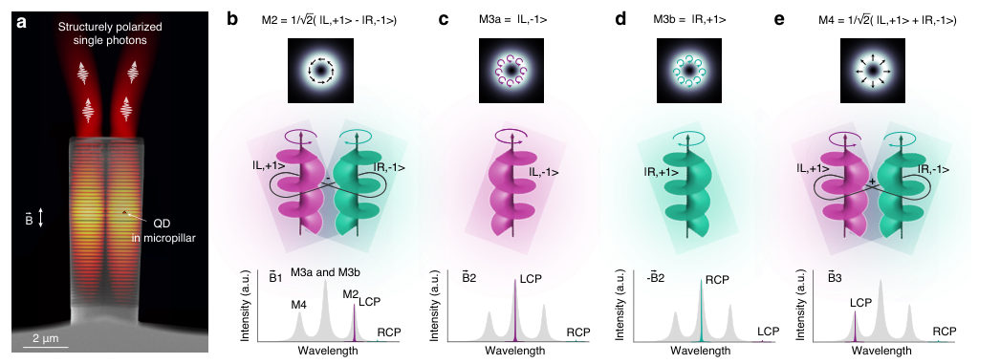
<figcaption class="paper-figure-caption"><b>Fig 1.</b> FIG. 1: Structured quantum light-matter interaction in a semiconductor cQED system. (a) Schematics of the employed cQED system in which a single QD is deterministically coupled to different structured cavity modes of the micropillar. (b) Spin-orbit entanglement in the form of M2 = √</figcaption>
</figure>
<figure class="paper-figure-card">
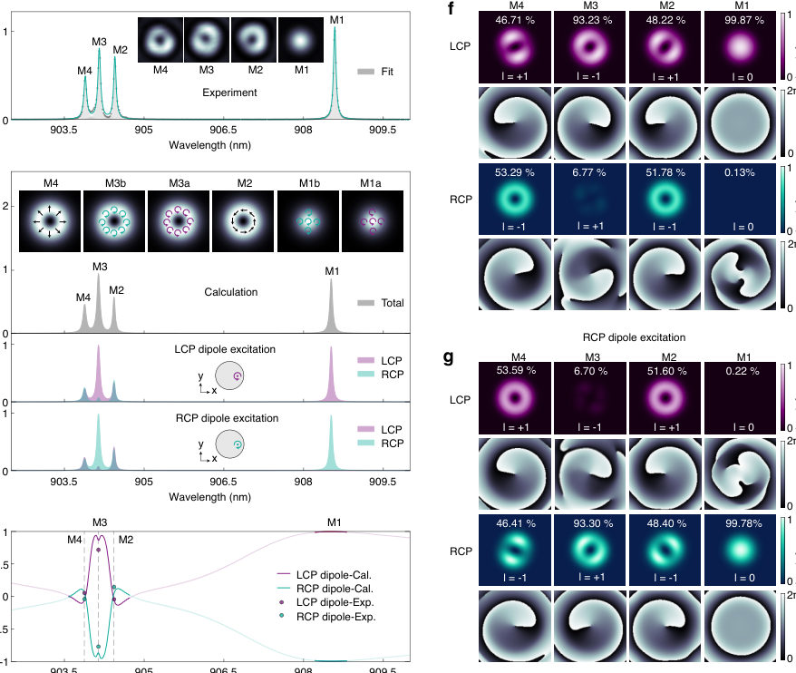
<figcaption class="paper-figure-caption"><b>Fig 2.</b> FIG. 2: Structured cavity modes and their polarization-selective excitations. (a) Measured PL spectrum of the micropillar cavity with an embedded QD under a high-excitation power. Inset: intensity profile of each cavity mode. (b) Calculated intensity and polarization profiles (the first row) of the cavity modes and the simulated spectrum (the second row) of the micropillar. The selective excitation of the cavity modes by using an LCP (c) and RCP (d) dipole source. (e) Calculated (solid lines) and measured (dots) Dcp for the different cavity modes. (f,g) Calculated intensity profiles and phase distributions of the near-field cavity modes excited by an LCP and an RCP dipole source,...</figcaption>
</figure>
<figure class="paper-figure-card">
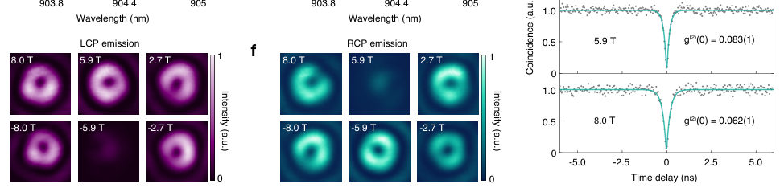
<figcaption class="paper-figure-caption"><b>Fig 3.</b> FIG. 3: Experimental verification of structured light-matter coupling at the single-photon level. (a) LCP and (b) RCP component of the magnetic field-dependent PL spectra for QD under low-power pulsed excitation. The vertical dash lines denote the cavity resonance of M2, M3 and M4. (c) LCP component of the LCP dipole emission at 2.7 T, 5.9 T, 8.0 T and -2.7 T, -5.9 T, -8.0 T. (d) RCP component of the LCP dipole emission at 2.7 T, 5.9 T, 8.0 T and -2.7 T, -5.9 T, -8.0 T. (e) LCP component of near-field profiles for the LCP dipole emission at 2.7 T, 5.9 T, 8.0 T and -2.7 T, -5.9 T, -8.0 T. (f) RCP component of near-field profiles for the LCP dipole emission at 2.7 T, 5.9 T, 8.0 T and -2.7 T,...</figcaption>
</figure>
<figure class="paper-figure-card">
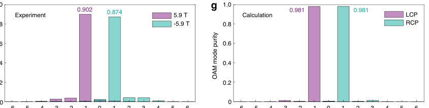
<figcaption class="paper-figure-caption"><b>Fig 4.</b> FIG. 4: Single-photon emission with spin-locked chiral OAMs. (a) phase profiles carried by the VWPs. calculated (b) and measured (c) near-field normalized intensity distributions of the LCP dipole emitter coupled to M3a. calculated (d) and measured (e) near-field normalized intensity distributions of the RCP dipole emitter coupled to M3b. Calculated (a) and measured (b) mode purity of the spin-locked chiral OAMs.The unexpected outside ring patterns in the experiment are due to the fact that the objective is slightly off from the focus in the measurement.</figcaption>
</figure>
<figure class="paper-figure-card">
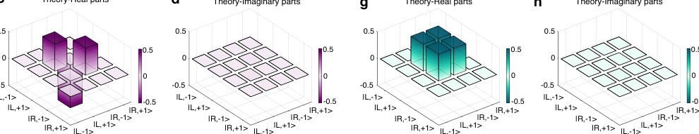
<figcaption class="paper-figure-caption"><b>Fig 5.</b> FIG. 5: Tunable spin-OAM entanglements in single photons. Real (a) and imaginary (b) part of the experimentally reconstructed density matrix for the entanglement in the form of √</figcaption>
</figure>
</div>

<p><strong>Summary.</strong> This paper reports on achieving controlled single-photon emission carrying spin-OAM entanglement within a semiconductor cavity QED system. By engineering structured optical modes in a micropillar, the researchers demonstrated that coupling a quantum dot dipole to specific resonances allows for dynamic generation and switching between different Bell states of entanglement. This opens a new paradigm for high-dimensional photonic quantum technologies.</p>
<p><strong>Why it may be interesting.</strong> This work provides an excellent platform for AMO physicists studying open quantum systems, as it demonstrates coherent control over multiple degrees of freedom (spin and OAM) in a solid-state emitter coupled to engineered photonic environments.</p>
<details>
<summary>Detailed structure</summary>
<p><strong>Main problem.</strong> The research addresses the largely unexplored area of structured light-matter interaction at the single-photon level, moving beyond conventional scalar interactions in cavity QED.</p>
<p><strong>Main result.</strong> The authors successfully demonstrated the generation and dynamic control of spin-orbit entangled single photons carrying chiral Orbital Angular Momentum (OAM) using a chip-scale semiconductor cQED device.</p>
<p><strong>Method.</strong> The study combines theoretical modeling (FDTD simulations) with advanced experimental techniques, including polarization-resolved photoluminescence spectroscopy and quantum state tomography.</p>
<p><strong>Model / system.</strong> The physical platform is a semiconductor cavity QED system utilizing an epitaxial quantum dot coupled to structured modes ($    ext{M}1-    ext{M}4$) within a micropillar cavity. The mode structure arises from sidewall confinement, leading to vector vortex resonances.</p>
<p><strong>Key observables.</strong> Spin-OAM entanglement (Bell states), Degree-of-circular-polarization ($D_{cp}$), OAM purity ($P_{	ext{OAM}}$), and Purcell enhancement factor ($\sim 4$).</p>
<p><strong>Important parameters / regimes.</strong> Operating at cryogenic temperatures ($  ext{T} = 1.67   ext{ K}$) under tunable magnetic fields (up to $\pm 9 	ext{ T}$); the coupling strength is tuned by matching QD emission to structured cavity resonances.</p>
<p><strong>Assumptions / limitations.</strong> The analysis relies on modeling the mode structure using paraxial approximations corrected for sidewall confinement, which induces spin-orbit coupling effects.</p>
<p><strong>Figures summary.</strong> Figures illustrate schematics of the cQED setup, PL spectra showing polarization selectivity and Purcell enhancement, near-field profiles confirming structured modes, and density matrices verifying tunable Bell states.</p>
<p><strong>Paper structure.</strong> The paper progresses from establishing the necessity of studying structured light-matter interaction to detailing the physical realization in a micropillar cavity. It then systematically demonstrates mode selection using circular polarizations, followed by quantifying entanglement generation via state tomography across different resonance modes ($  ext{M}2$, $ ext{M}4$).</p>
</details>
<details>
<summary>Abstract</summary>
<p>A cavity quantum electrodynamics (cQED) system consisting of a confined single photon and a single quantum emitter serves as a fundamental block for quantum optics and photonic quantum technologies. The canonical optical mode employed in the conventional cavity quantum electrodynamics features a uniform polarization distribution, leading to the scalar light-matter interaction in most existing experiments. Despite the rapid progress in the generation of structured light with spatially varied polarizations, the structured light-matter interaction, especially at the single quanta level, is highly intriguing yet largely unexplored. Here, we present the structured light-matter interaction at the single-photon level in a semiconductor cavity quantum electrodynamics system. Four distinct structured cavity modes that are spectrally close to each other are constructed in a micropillar cavity. By spatially locating a single epitaxial quantum dot (QD) at the periphery of a semiconductor micropillar cavity and spectrally tuning the QD emission wavelength into the resonances of the structured cavity modes, cavity-enhanced single-photon emissions with spin-locked chiral orbital angular momentum (OAM) and engineerable spin-orbit entanglements are achieved within a single wavelength-scale device. Our work opens an unexplored paradigm of structured quantum light-matter interactions and may further advance chiral quantum optics and high-dimensional photonic quantum technology.</p>
</details>
<p><sub><a href="#top">↑ back to top</a></sub></p>

<p><a id="paper-2607.21515"></a></p>
<h3 id="extended-single-atom-tweezer-arrays-in-high-cooperativity-cavity-qed"><a href="http://arxiv.org/abs/2607.21515v1">Extended Single-Atom Tweezer Arrays in High-Cooperativity Cavity-QED</a></h3>
<p><strong>Authors:</strong> Thomas Picot, Clément Raphin, Marcel Kern, Pierre-Antoine Bourdel, Théo Ahamdach, Jakob Reichel, Romain Long<br>
<strong>Type:</strong> experiment · <strong>Category:</strong> other · <strong>PDF:</strong> <a href="https://arxiv.org/pdf/2607.21515v1">https://arxiv.org/pdf/2607.21515v1</a><br>
<strong>Analysis basis:</strong> full PDF text, analyzed in chunks
<strong>Topic relevance:</strong> 🔥 <code>Tavis-Cummings &amp; cavity-many-emitter</code> <strong>5/5</strong> · 🔥 <code>analog quantum simulation</code> <strong>4/5</strong> · 🔥 <code>correlated cavity matter</code> <strong>4/5</strong> · 🔥 <code>quantum optics experiment</code> <strong>4/5</strong> · <code>QC/QI experiment</code> <strong>3/5</strong> · <code>quantum measurements</code> <strong>3/5</strong> · <code>Rydberg arrays</code> <strong>2/5</strong> · <code>measurement-induced transitions</code> <strong>2/5</strong> · <code>correlated / nonlocal dissipation</code> <strong>1/5</strong> · <code>driven-dissipative phase transition</code> <strong>1/5</strong> · <code>entanglement &amp; information structure</code> <strong>1/5</strong> · <code>interference shaping light</code> <strong>1/5</strong></p>
<div class="figure-strip-hint">↔ Scroll figures horizontally</div>
<div class="paper-figures-scroll">
<figure class="paper-figure-card">
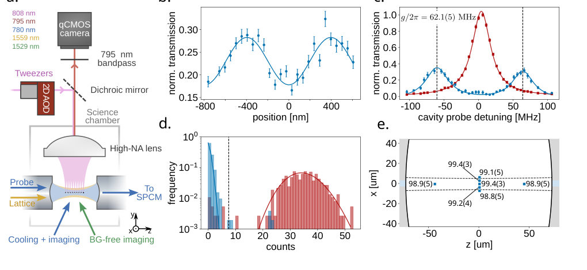
<figcaption class="paper-figure-caption"><b>Fig 1.</b> Figure 1. Single atom strongly coupled to the cavity. a. Simplified sketch of the experiment. Atoms are trapped inside a fiber Fabry-Perot microcavity by an array of optical tweezers generated by a pair of acousto-optic deflectors (2D AOD) along the cavity axis, and focused with a high N.A. lens. b. Mapping of the cavity mode by moving the single-atom tweezer along the z axis and measuring cavity transmission while measuring the atom position, and sinusoidal fit (solid line). The cavity probe frequency sits on the slope of the polariton. c. Vacuum Rabi Splitting observed in cavity transmission for a single atom at the center of the cavity (blue points), fitted by a double Lorentzian (blue...</figcaption>
</figure>
<figure class="paper-figure-card">
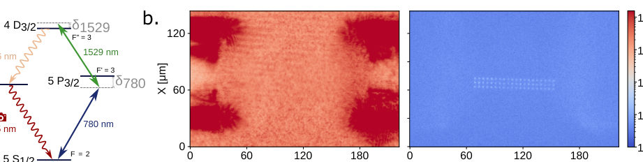
<figcaption class="paper-figure-caption"><b>Fig 2.</b> Figure 2. Background-free fluorescence scheme. a. Relevant level scheme. The atoms are excited via the D2 transition at 780 nm (blue), followed by a second excitation at 1529 nm (green). The atom subsequently decays to an intermediate state at 1476 nm (yellow), before emitting a photon on the 795 nm imaging transition. b. Comparison between standard fluorescence imaging and the background-free scheme with 50 ms exposure time. Left: Standard single-photon excitation at low power (s780 = 0.1 per beam) to avoid camera saturation. Right: Background-free fluorescence image obtained with s780 = 3.5 and s1529 = 5.2 per beam. For standard fluorescence imaging, the residual background in a 3 ×...</figcaption>
</figure>
<figure class="paper-figure-card">
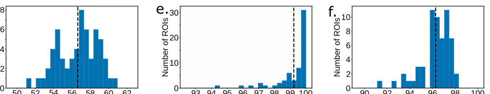
<figcaption class="paper-figure-caption"><b>Fig 3.</b> Figure 3. Fluorescence characterization. a. Two successive single-shot fluorescence images of a 20 × 3 tweezer array taken with 50 ms exposure time. The upper image and the lower image are separated by a 25 ms cooling phase. Red rectangle indicates a 3×3 pixel ROI. b. A histogram of the summed photon counts in the ROI over 1000 experimental cycles, with a double gaussian fit (solid line) and computed optimal threshold (dashed line). c. Scatter plot of the summed photon counts in the two fluorescence images with optimal threshold (dashed line). This figure shows the survival probability of an atom after the first fluorescence. d. Histogram of the loading probability over the 60 tweezer...</figcaption>
</figure>
<figure class="paper-figure-card">
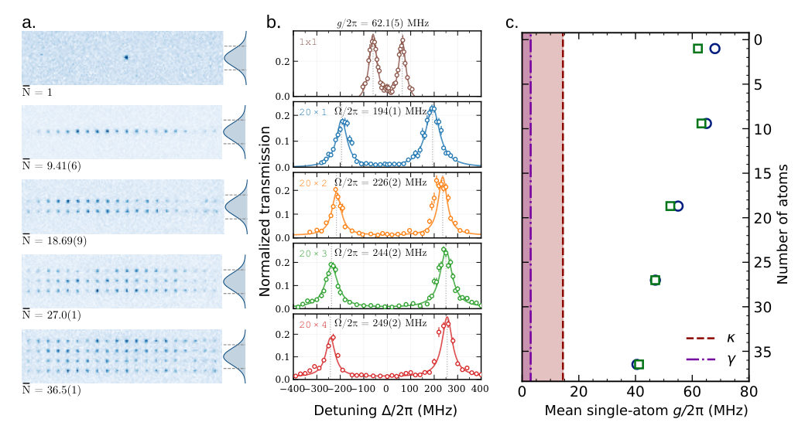
<figcaption class="paper-figure-caption"><b>Fig 4.</b> Figure 4. Vacuum Rabi-splitting measurement for different configurations of single-atom array. a. Averaged fluorescence image of the tweezers configurations. Gaussian shape on the right indicates spatial extension of the cavity mode of waist w0 = 5.6 µm. The indicated number ¯ N corresponds to the averaged number of atoms during the probing sequence. b. Vacuum Rabi Splitting for the different array configurations. Each point is an average of around 30 experimental cycles. Separation between the two polaritonic peaks 2Ωis evaluated by a double Lorentzian fit (solid line). c. Comparison between the expected average single-atom coupling strength (blue circles) with the measured value g = Ω/ √¯...</figcaption>
</figure>
</div>

<p><strong>Summary.</strong> The research demonstrates a robust platform for many-body cavity quantum electrodynamics using arrays of single $^{87}	ext{Rb}$ atoms trapped in optical tweezers near a microcavity. By combining site-resolved fluorescence imaging with measurements of collective vacuum Rabi splitting, the authors establish that high cooperativity can be maintained across extended atomic ensembles. This paves the way for scalable quantum simulation and computation utilizing cavity coupling.</p>
<p><strong>Why it may be interesting.</strong> This work pushes the boundaries of cavity QED by merging two challenging aspects: scaling up atom numbers while maintaining strong light-matter interaction ($C$), and achieving high-fidelity, local readout simultaneously.</p>
<details>
<summary>Detailed structure</summary>
<p><strong>Main problem.</strong> To establish a high-cooperativity platform for many-body cavity-QED that is compatible with site-resolved detection across extended arrays of single atoms.</p>
<p><strong>Main result.</strong> The authors successfully demonstrated high single-atom cooperativity ($C \simeq 88$) and maintained compatibility for collective coupling in large arrays (up to $ar{N} \simeq 36$), enabling many-body cavity control with local readout.</p>
<p><strong>Method.</strong> The experiment combines optical tweezer trapping of $^{87}	ext{Rb}$ atoms, site-resolved fluorescence imaging using a background-free two-photon scheme, and measurement of collective vacuum Rabi splitting in a fiber Fabry-Perot microcavity.</p>
<p><strong>Model / system.</strong> The physical system is an array of individual $^{87}	ext{Rb}$ atoms trapped by optical tweezers and coupled to the quantized electromagnetic field mode of a high-finesse fiber Fabry-Perot cavity. The coupling regime is characterized by the cooperativity parameter $C$.</p>
<p><strong>Key observables.</strong> Single-atom cooperativity ($C$), detection fidelity for hyperfine states, mean atom number ($ar{N}$), and collective vacuum Rabi splitting spectrum.</p>
<p><strong>Important parameters / regimes.</strong> Single-atom cooperativity $\mathcal{C} \sim 90$; Mean atom number up to $\simeq 36$; Detection fidelities $>98.8\%$.</p>
<p><strong>Assumptions / limitations.</strong> The primary limitations noted are the state detection fidelity being limited by hyperfine-state lifetime and preparation imperfection, rather than intrinsic readout discrimination.</p>
<p><strong>Figures summary.</strong> Figures illustrate the experimental setup, cavity mode mapping, vacuum Rabi splitting measurements confirming coupling strength for various array sizes (e.g., 20-site chain), and detailed characterization of background-free fluorescence imaging fidelity across the array.</p>
<p><strong>Paper structure.</strong> The paper progresses by first demonstrating high single-atom cooperativity, then validating site-resolved detection compatibility over extended arrays, and finally characterizing the collective coupling strength as a function of array geometry (1D chains to 2D lattices).</p>
</details>
<details>
<summary>Abstract</summary>
<p>A central challenge for cavity-QED-based quantum technologies is to make high-cooperativity optical interfaces compatible with site-resolved arrays of single atoms. Here, we demonstrate optical tweezer arrays of individual $^{87}$Rb atoms inside a fiber Fabry-Perot microcavity with single-atom cooperativity $\mathcal{C} \sim 90$. We combine background-free site-resolved fluorescence imaging of extended arrays with collective coupling to a common cavity mode for arrays with a mean atom number up to $\bar{N} \simeq 36$. These results establish a high-cooperativity platform for many-body cavity-QED with site-resolved detection and control.</p>
</details>
<p><sub><a href="#top">↑ back to top</a></sub></p>

<p><a id="paper-2607.21523"></a></p>
<h3 id="optimal-feedback-control-under-stepwise-equilibration-and-partial-observation"><a href="http://arxiv.org/abs/2607.21523v1">Optimal feedback control under stepwise equilibration and partial observation</a></h3>
<p><strong>Authors:</strong> Francesco Mottes, Michael P. Brenner<br>
<strong>Type:</strong> theory · <strong>Category:</strong> statistical mechanics · <strong>PDF:</strong> <a href="https://arxiv.org/pdf/2607.21523v1">https://arxiv.org/pdf/2607.21523v1</a><br>
<strong>Analysis basis:</strong> full PDF text, analyzed in chunks
<strong>Topic relevance:</strong> 🔥 <code>quantum measurements</code> <strong>5/5</strong> · 🔥 <code>measurement-induced transitions</code> <strong>4/5</strong> · <code>methods for driven-dissipative</code> <strong>3/5</strong> · <code>non-equilibrium dynamics</code> <strong>3/5</strong> · <code>non-equilibrium universality</code> <strong>2/5</strong> · <code>Keldysh / 2PI / non-Gaussian methods</code> <strong>1/5</strong> · <code>correlated / nonlocal dissipation</code> <strong>1/5</strong> · <code>driven-dissipative phase transition</code> <strong>1/5</strong> · <code>entanglement &amp; information structure</code> <strong>1/5</strong></p>
<div class="figure-strip-hint">↔ Scroll figures horizontally</div>
<div class="paper-figures-scroll">
<figure class="paper-figure-card">
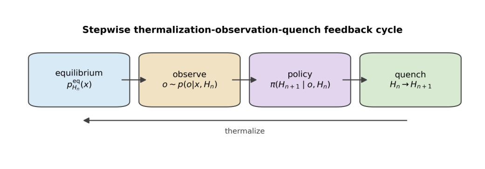
<figcaption class="paper-figure-caption"><b>Fig 1.</b> FIG. 1. Stepwise thermalization–observation–quench feedback cycle. At the start of cycle n the system is equilibrated under Hn, an observation o ∼p(o | x, Hn) is acquired, and the policy π(Hn+1 | o, Hn) selects the next Hamiltonian. The resulting quench Hn →Hn+1 is followed by re-thermalization under the new Hamiltonian before the next decision.</figcaption>
</figure>
<figure class="paper-figure-card">
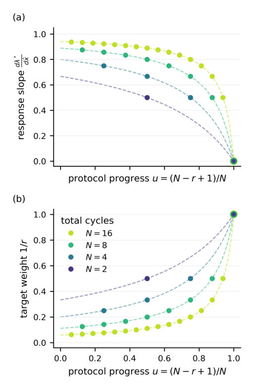
<figcaption class="paper-figure-caption"><b>Fig 2.</b> FIG. 2. Time dependence of the optimal feedback law λ∗(o; r) = r−1</figcaption>
</figure>
<figure class="paper-figure-card">
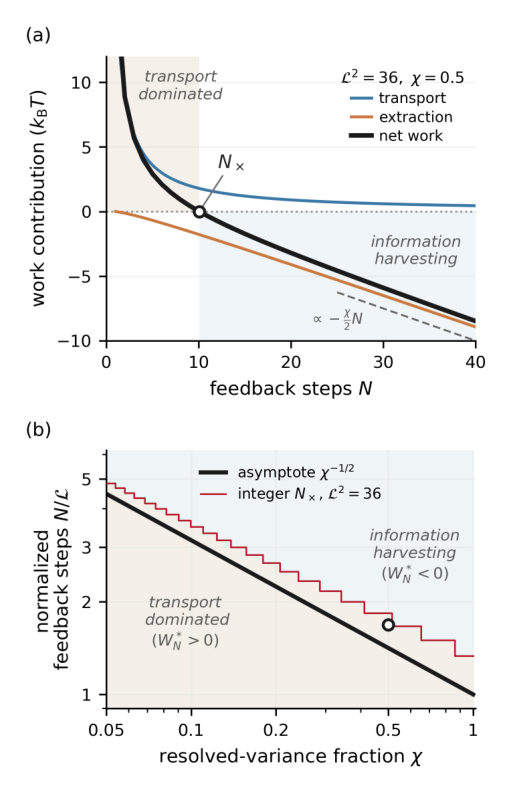
<figcaption class="paper-figure-caption"><b>Fig 3.</b> FIG. 3. Transport–information decomposition of the opti- mal work. (a) Positive transport contribution L2/(2N), neg- ative observation-enabled contribution −1</figcaption>
</figure>
<figure class="paper-figure-card">
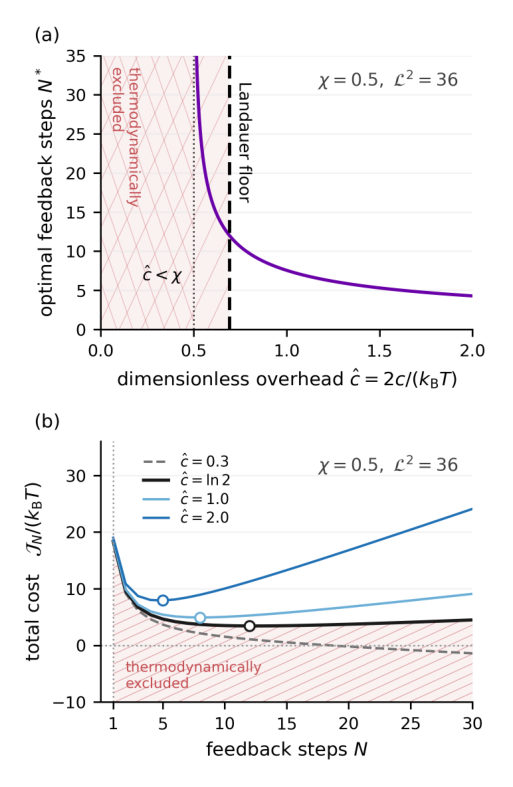
<figcaption class="paper-figure-caption"><b>Fig 4.</b> FIG. 4. Optimal number of feedback cycles selected by a per- cycle overhead for χ = 0.5 and L2 = 36. (a) Positive root N ∗</figcaption>
</figure>
</div>

<p><strong>Summary.</strong> This paper develops an optimal feedback control theory for driving mesoscopic systems between states using noisy measurements. By analyzing a harmonic trap model, it shows that minimum work decomposes into transport costs and information gains derived from measurement resolution. The results provide quantitative predictions for the trade-off between process time, measurement quality, and thermodynamic efficiency.</p>
<p><strong>Why it may be interesting.</strong> This work provides a rigorous theoretical framework for quantifying how information gained from noisy measurements can reduce the thermodynamic cost of non-equilibrium processes, which is highly relevant to understanding energy efficiency in nanoscale machines and quantum thermodynamics.</p>
<details>
<summary>Detailed structure</summary>
<p><strong>Main problem.</strong> The work is to determine the minimum expected work required to drive a mesoscopic system through a finite-time, non-equilibrium transformation using optimal feedback control under partial observation.</p>
<p><strong>Main result.</strong> The minimum work decomposes into a positive thermodynamic transport cost and a negative information-enabled extraction term; furthermore, the analysis determines an optimal finite number of cycles when intervention costs are considered.</p>
<p><strong>Method.</strong> The problem is mapped onto a partially observable Markov decision process (POMDP) solved via a finite-horizon Bellman recursion. Analytical solutions are derived for the harmonic trap case by simplifying the belief state evolution.</p>
<p><strong>Model / system.</strong> The model considers microscopic machines undergoing non-equilibrium transformations, specifically using a one-dimensional harmonic trap $H_\lambda(x) = k/2(x - \lambda)^2$. The process involves discrete steps of thermal equilibration, noisy measurement, and Hamiltonian quenching.</p>
<p><strong>Key observables.</strong> Minimum expected work ($W^*_N$), thermodynamic transport cost, information extraction gain, optimal feedback law $\lambda^*(o; r)$, and the optimal cycle count $N^*$.</p>
<p><strong>Important parameters / regimes.</strong> Detector quality ($\chi = \eta^2 / \sigma_{eq}^2$), fixed intervention cost ($c$), and the total number of steps ($N$).</p>
<p><strong>Assumptions / limitations.</strong> The analysis relies on the stepwise equilibration limit, where local relaxation is much faster than the driving/measurement cycle. The harmonic trap structure allows for a collapse of the belief state to its mean estimate.</p>
<p><strong>Figures summary.</strong> Figures illustrate the feedback cycle (thermalization-observation-quench), the time evolution of the optimal control law $\lambda^*(o; r)$, and plots showing work crossing points and asymptotic behavior related to information gain.</p>
<p><strong>Paper structure.</strong> The paper establishes the POMDP framework, solves the Bellman recursion for the harmonic trap benchmark case, derives the explicit form of minimum work $W^*_N$ based on control parameters, and finally determines the optimal cycle count $N^*$ by minimizing the total cost function $J_N = W^*_N + cN$.</p>
</details>
<details>
<summary>Abstract</summary>
<p>Many microscopic machines rely on noisy signals to direct nonequilibrium transformations and operate in a timescale-separated regime. We consider feedback protocols in which a system equilibrates between rapid, measurement-conditioned changes of its energy landscape. In this limit, the partially observable control problem reduces exactly to a finite-horizon Bellman recursion over Hamiltonian updates. For a harmonic trap translated to a prescribed target under noisy position measurements, we solve this recursion analytically. The optimal protocol balances its response to the estimated fluctuation against progress toward the target, exploiting information early while enforcing the endpoint near the deadline. The minimum work decomposes into a positive thermodynamic-length transport cost and a negative information-enabled extraction term set by the fraction of equilibrium fluctuations resolved by the measurement. When a fixed intervention cost exceeds the asymptotic extraction per cycle, it selects a finite optimal number of cycles. We show that, in this translated harmonic case, the minimum thermodynamic cost of creating and resetting the measurement record always exceeds this threshold, making the optimal cycle count finite and the net work non-negative for any measurement channel.</p>
</details>
<p><sub><a href="#top">↑ back to top</a></sub></p>

<p><a id="paper-2607.21501"></a></p>
<h3 id="flow-of-local-sensitivity-in-a-spin-chain-coupled-to-a-bosonic-bath"><a href="http://arxiv.org/abs/2607.21501v1">Flow of local sensitivity in a spin chain coupled to a bosonic bath</a></h3>
<p><strong>Authors:</strong> Marcin Płodzień<br>
<strong>Type:</strong> theory · <strong>Category:</strong> other · <strong>PDF:</strong> <a href="https://arxiv.org/pdf/2607.21501v1">https://arxiv.org/pdf/2607.21501v1</a><br>
<strong>Analysis basis:</strong> full PDF text, analyzed in chunks
<strong>Topic relevance:</strong> 🔥 <code>entanglement &amp; information structure</code> <strong>4/5</strong> · <code>analog quantum simulation</code> <strong>3/5</strong> · <code>correlated / nonlocal dissipation</code> <strong>3/5</strong> · <code>driven-dissipative phase transition</code> <strong>3/5</strong> · <code>exotic spin models in light-matter</code> <strong>3/5</strong> · <code>methods for driven-dissipative</code> <strong>3/5</strong> · <code>non-equilibrium dynamics</code> <strong>3/5</strong> · <code>Keldysh / 2PI / non-Gaussian methods</code> <strong>2/5</strong> · <code>non-equilibrium universality</code> <strong>2/5</strong> · <code>spintronics-quantum-optics interface</code> <strong>2/5</strong> · <code>Kondo &amp; dissipative impurity</code> <strong>1/5</strong> · <code>Tavis-Cummings &amp; cavity-many-emitter</code> <strong>1/5</strong> · <code>correlated cavity matter</code> <strong>1/5</strong> · <code>scars &amp; prethermalization</code> <strong>1/5</strong></p>
<div class="figure-strip-hint">↔ Scroll figures horizontally</div>
<div class="paper-figures-scroll">
<figure class="paper-figure-card">
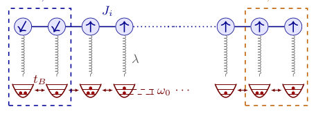
<figcaption class="paper-figure-caption"><b>Fig 1.</b> FIG. 1. A schematic illustration of the physical model. A spin chain with uniform or engineered exchange coupling (blue lines) couples to a local bosonic mode per site (red levels, featuring a local frequency and nearest-neighbor hopping). A parameter phase is encoded on a localized block of sites (blue dashed rectangle) and read out at later times from another restricted region of sites (orange dashed rectangle).</figcaption>
</figure>
<figure class="paper-figure-card">
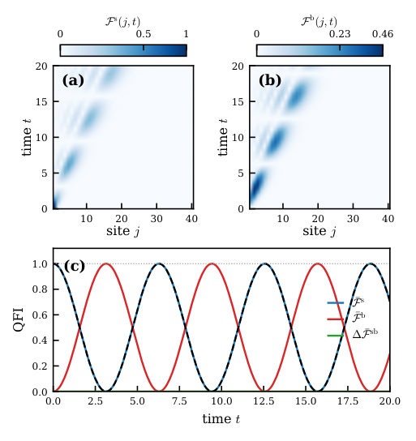
<figcaption class="paper-figure-caption"><b>Fig 2.</b> FIG. 2. Jaynes–Cummings exchange at resonance on the uni- form XX chain [exact single-particle solution, L = 40, ω0 = 0, tB = 0.5J, λ = 0.5J, edge encoding]. (a),(b) Spin and bath QFI densities Fs(j, t) and Fb(j, t). By Eq. (12) these equal the occupations exactly, and the block deficit vanishes iden- tically. (c) Site-summed shares (dashed: closed-form result).</figcaption>
</figure>
<figure class="paper-figure-card">
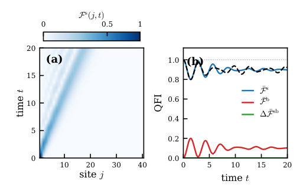
<figcaption class="paper-figure-caption"><b>Fig 3.</b> FIG. 3. Jaynes–Cummings off resonance [L = 40, ω0 = 2J, tB = 0.3J, λ = 0.5J; exact single-particle solution, edge en- coding]. (a) Single-qubit QFI density Fs(j, t); the occupation maps coincide with the QFI densities, as in Fig. 2, and are omitted. (b) Site-summed shares (dashed: closed-form re- sult): the site-summed share ¯F s collapses to a plateau as the channels dephase, while the deficit ∆¯F sb remains zero.</figcaption>
</figure>
<figure class="paper-figure-card">
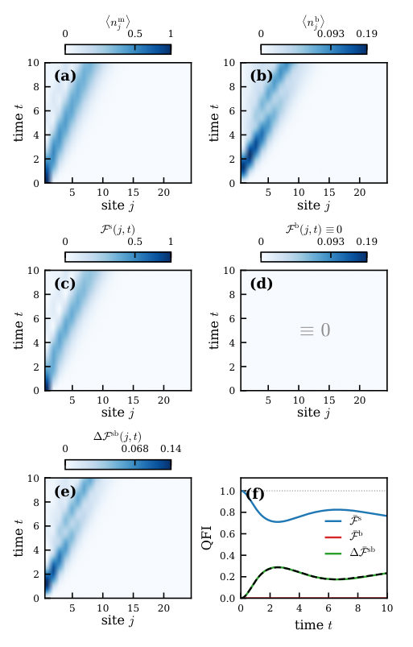
<figcaption class="paper-figure-caption"><b>Fig 4.</b> FIG. 4. Holstein coupling on the uniform XX chain [L = 24, ω0 = 2J, tB = 0.5J, λ = 0.5J, edge encoding; TEBD]. (a),(b) Occupations on the tangent state. (c),(d) QFI den- sities Fs and Fb ≡0; the boson cloud in (b) is populated while (d) stays empty of phase information, and the color scale of the identically zero panel is nominal. (e) Block deficit ∆Fsb. (f) Whole-chain residual ∆¯F sb tracking 1 −e−⟨Nb⟩</figcaption>
</figure>
<figure class="paper-figure-card">
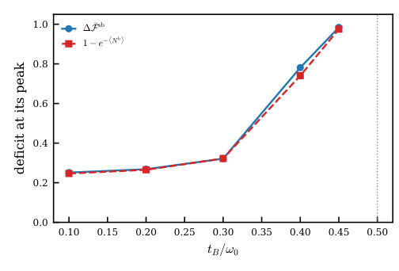
<figcaption class="paper-figure-caption"><b>Fig 5.</b> FIG. 5. Correlation deficit of the itinerant Holstein coupling as the bath band softens [L = 20, ω0 = 2J, λ = 0.5J; TEBD]. Deficit at its peak time (circles) and 1 −e−⟨Nb⟩(squares) vs bath hopping tB/ω0 (dotted: soft-mode boundary tB = ω0/2).</figcaption>
</figure>
</div>

<p><strong>Summary.</strong> This work analyzes the flow of local quantum sensitivity (QFI) between a spin chain and a bosonic bath under different coupling mechanisms. By treating the environment unitarily, it distinguishes between couplings that store lost information in correlations versus those that transfer it entirely to the bath. The findings reveal fundamental dependencies on system periodicity for any potential revival of the initial sensitivity.</p>
<p><strong>Why it may be interesting.</strong> It provides a detailed quantum information perspective on open system dynamics, showing how entanglement and correlation storage govern metrological resource decay in realistic physical models like spin chains coupled to baths.</p>
<details>
<summary>Detailed structure</summary>
<p><strong>Main problem.</strong> The study investigates how local quantum sensitivity, quantified by Quantum Fisher Information (QFI), flows between a spin chain and an attached bosonic bath.</p>
<p><strong>Main result.</strong> The coupling symmetry dictates the fate of lost information: Holstein coupling stores it in correlations, while Jaynes-Cummings coupling transfers it fully to the bath. Revival depends critically on shared periodicity among system frequencies.</p>
<p><strong>Method.</strong> The analysis uses a full unitary evolution approach (avoiding Lindblad approximations) to track QFI flow and calculates the 'correlation deficit' ($\Delta F_{sb}$) as a diagnostic tool.</p>
<p><strong>Model / system.</strong> The model consists of a spin chain coupled to a bosonic bath, governed by Hamiltonians including XX exchange, Jaynes-Cummings (JC), or Holstein couplings. The system is analyzed for its unitary evolution dynamics.</p>
<p><strong>Key observables.</strong> Local QFIs ($F_s, F_b, F_{sb}$), the correlation deficit ($\Delta F_{sb}$), and time-dependent transfer functions $ar{F}_s(t)$.</p>
<p><strong>Important parameters / regimes.</strong> Coupling type (JC vs. Holstein), bath spectrum/frequencies, and resonance conditions ($t_B = J/2$).</p>
<p><strong>Assumptions / limitations.</strong> The analysis treats the bath as a full many-body quantum system undergoing unitary evolution; some results rely on approximations like superselection rules or single-excitation sectors.</p>
<p><strong>Figures summary.</strong> Figures illustrate JC exchange dynamics showing QFI oscillation (resonance vs. off-resonance) and confirm tensor network convergence for both coupling types.</p>
<p><strong>Paper structure.</strong> The paper systematically compares the flow of sensitivity under different couplings, analyzing local block diagnostics ($\Delta F_{sb}$) against site-summed quantities to diagnose coherence transfer efficiency over time.</p>
</details>
<details>
<summary>Abstract</summary>
<p>We study how local sensitivity to an encoded parameter, captured by the quantum Fisher information, flows between a spin chain, a coupled bosonic bath, and their quantum correlations, where we treat the bath as a full many-body quantum system beyond the Lindbladian approximation. We analyze how the coupling symmetry determines the destination of the departed sensitivity directly at the level of the Hamiltonian. We consider an excitation-exchanging Jaynes--Cummings coupling, which preserves the total number of excitations, and a spin-excitation-conserving Holstein coupling. We find that the Holstein coupling leaves the bath with no first-order information about the phase and stores the lost sensitivity entirely in spin--bath correlations, whereas the Jaynes--Cummings coupling passes this sensitivity to the bath, in full for a single excitation. The bath spectrum then governs whether the sensitivity ever returns to the spins. It revives fully and periodically when the coupled-system frequencies share a common period, but when those frequencies disperse the departed share dephases across the bath modes and never returns. We note that a transported metrological register loses more sensitivity than its arrival fidelity implies.</p>
</details>
<p><sub><a href="#top">↑ back to top</a></sub></p>

<p><a id="paper-2607.21583"></a></p>
<h3 id="complexity-transition-in-the-dicke-model-of-light-matter-interaction"><a href="http://arxiv.org/abs/2607.21583v1">Complexity transition in the Dicke model of light-matter interaction</a></h3>
<p><strong>Authors:</strong> Yicheng Zhang, Erhai Zhao<br>
<strong>Type:</strong> theory · <strong>Category:</strong> other · <strong>PDF:</strong> <a href="https://arxiv.org/pdf/2607.21583v1">https://arxiv.org/pdf/2607.21583v1</a><br>
<strong>Analysis basis:</strong> full PDF text, analyzed in chunks
<strong>Topic relevance:</strong> 🔥 <code>Tavis-Cummings &amp; cavity-many-emitter</code> <strong>4/5</strong> · <code>Dicke superradiance</code> <strong>3/5</strong> · <code>analog quantum simulation</code> <strong>3/5</strong> · <code>correlated cavity matter</code> <strong>3/5</strong> · <code>driven-dissipative phase transition</code> <strong>3/5</strong> · <code>correlated / nonlocal dissipation</code> <strong>2/5</strong> · <code>entanglement &amp; information structure</code> <strong>2/5</strong> · <code>methods for driven-dissipative</code> <strong>2/5</strong> · <code>non-equilibrium dynamics</code> <strong>2/5</strong> · <code>non-equilibrium universality</code> <strong>2/5</strong> · <code>Keldysh / 2PI / non-Gaussian methods</code> <strong>1/5</strong> · <code>exotic spin models in light-matter</code> <strong>1/5</strong> · <code>superradiant laser</code> <strong>1/5</strong></p>
<div class="figure-strip-hint">↔ Scroll figures horizontally</div>
<div class="paper-figures-scroll">
<figure class="paper-figure-card">
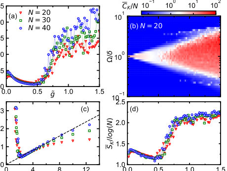
<figcaption class="paper-figure-caption"><b>Fig 1.</b> FIG. 1. The Krylov dynamics of Dicke model from the initial state θ0 = 0 and α0 = 0. (a) The long-time average of Krylov complexity CK/N 2 as a function of ˜g at resonance δ = Ω. The number of spins N = 20 (triangles), 30 (squares), 40 (circles). (b) The color-coded CK value on the plane of ˜g and Ω/δ for N = 20. (c) The same CK as in (a) but plotted against 1/˜g to test its scaling with N 3/2. (e) The Krylov entropy SK for δ = Ω. The time average is taken over gt ∈[50, 200].</figcaption>
</figure>
<figure class="paper-figure-card">
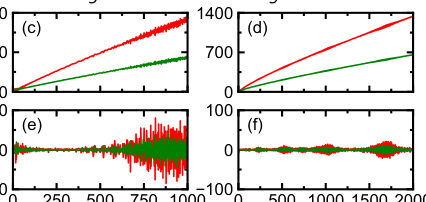
<figcaption class="paper-figure-caption"><b>Fig 2.</b> FIG. 2. Left column: (a) The probability pk(t) of finding the particle on site k of the Krylov lattice at time t for ˜g = 0.2 in the regular regime. The solid line shows CK(t). (c) The corresponding aK (red) and bK (green) are roughly linear in k. (e) The profiles of diagonal δaK (red) and off-diagonal δbK (green) disorder, where aK and bK are sliding self-averages over k ± 10. Right column: (b), (d), (f) are similar plots for ˜g = 1.2 in the chaotic regime. N = 20 and δ = Ω.</figcaption>
</figure>
<figure class="paper-figure-card">
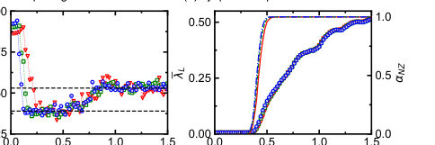
<figcaption class="paper-figure-caption"><b>Fig 3.</b> FIG. 3. (a) The average of magnetization ˆSz and boson occu- pation ˆna over time interval gt ∈[50, 200]. (b) Time-averaged spin-boson entanglement entropy SvN. (c) The mean ratio of consecutive level spacings r within a finite window contain- ing the initial energy. Horizontal dashed lines are r = 0.386 (Poisson) and 0.536 (Wigner-Dyson). (d) Symbols: Lyapunov exponent λL averaged over sampled initial states. Lines: αNZ, the fraction of initial states with finite λL &gt; 0.01. N = 20 (triangles), 30 (squares), and 40 (circles); δ = Ω.</figcaption>
</figure>
<figure class="paper-figure-card">
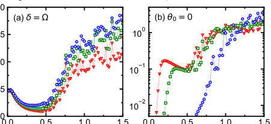
<figcaption class="paper-figure-caption"><b>Fig 4.</b> FIG. 4. The robustness of the complexity transition. (a) The long-time average CK for initial states with finite θ0.(b) CK (in log scale) off resonance, for a few different Ω/δ values. The time average is taken over gt ∈[50, 200] and N = 20.</figcaption>
</figure>
<figure class="paper-figure-card">
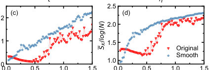
<figcaption class="paper-figure-caption"><b>Fig 5.</b> FIG. 5. (a) CK(t) for the Rindler-Krylov Hamiltonian Eq. (3) for a few η values near 0.5. (b) Maximum values of CK (black) and SK (blue) as functions of η show a clear delocalization transition.L = 1000 for (a) and (b). (c) CK of the full model (red triangles) using the original (ak, bk) versus the smoothed model (dark blue stars) using (ak, bk).(d) Comparing SK of the two models. L = 2400, N = 20 for (c) and (d).</figcaption>
</figure>
</div>

<p><strong>Summary.</strong> The paper investigates how tuning the coupling strength in the Dicke model drives its dynamics across a sharp transition point. By employing Krylov complexity, the authors distinguish between two regimes: one characterized by confined oscillations and another exhibiting wave packet 'spaghettification.' This work establishes $    ext{CK}$ as a sensitive diagnostic for identifying quantum chaos transitions in light-matter interactions.</p>
<p><strong>Why it may be interesting.</strong> This work provides a powerful diagnostic tool ($ ext{CK}$) to distinguish between integrable and chaotic quantum dynamics in cavity QED systems, linking complexity measures directly to fundamental physical transitions like those seen in light-matter coupling.</p>
<details>
<summary>Detailed structure</summary>
<p><strong>Main problem.</strong> The study aims to identify and characterize non-analytical or discontinuous transitions in the dynamics of an interacting quantum system using Krylov complexity.</p>
<p><strong>Main result.</strong> A clear transition point ($    ilde{g}_c$) is found where the dynamics switch between a confined, oscillating regime (regular) and a continuously stretching/disintegrating regime (chaotic).</p>
<p><strong>Method.</strong> The authors use Krylov complexity ($    ext{CK}$) and Krylov entropy ($   ext{SK}$), analyzing the time evolution of the system mapped onto a hopping problem on a Krylov lattice.</p>
<p><strong>Model / system.</strong> The primary model is the Dicke model, describing two-level atoms coupled to a cavity photon mode. The analysis involves mapping its dynamics to an effective Hamiltonian structure analyzed via Lanczos recursion coefficients.</p>
<p><strong>Key observables.</strong> Krylov Complexity ($   ext{CK}$), Krylov Entropy ($   ext{SK}$), and the ratio of Lanczos coefficients ($\eta = b_k/a_k$).</p>
<p><strong>Important parameters / regimes.</strong> Coupling strength ($g$) or its dimensionless form ($ ilde{g}$), photon energy difference ($\delta$), and spin state splitting ($\Omega$). The transition occurs around $   ilde{g}_c \sim 0.5$.</p>
<p><strong>Assumptions / limitations.</strong> The analysis relies on mapping the system dynamics to a Krylov lattice structure, and some results are compared against toy models (e.g., Rindler-Krylov Hamiltonian) which may be approximations.</p>
<p><strong>Figures summary.</strong> Figures illustrate $   ext{CK}$ vs. $  ilde{g}$ showing sharp changes; phase diagrams map complexity regimes; wave probability $p_k(t)$ shows breathing in the regular regime and stretching/spaghettification in the chaotic regime.</p>
<p><strong>Paper structure.</strong> The paper introduces the Dicke model, defines complexity measures ($   ext{CK}$, $ ext{SK}$), maps the dynamics to a Krylov lattice, analyzes how tuning parameters ($   ilde{g}$) drive the system through distinct dynamic regimes (regular vs. chaotic), and uses scaling laws and toy models to characterize the transition.</p>
</details>
<details>
<summary>Abstract</summary>
<p>Tuning the coupling strength $g$ of an interacting quantum system may drive a sudden change in its ground-state or thermal properties. To identify and grasp non-analytical, or even discontinuous, transitions in far-from-equilibrium dynamics proves more challenging. Recently Krylov complexity $C_K$ has offered fresh insights about operator growth, thermalization, and chaos in quantum dynamics. Yet it remains unclear if, and how, changing $g$ can trigger a sharp transition in the complexity measures. Here we present evidence for such a transition by mapping out the complexity phase diagram of the paradigmatic Dicke model describing two-level atoms coupled to a cavity photon mode. Two qualitatively different regimes of dynamics are identified and characterized. At the transition, the slope of $C_K$ changes suddenly to coincide with a jump in the Krylov entropy. We elucidate the nature of the regime change from the wave packet dynamics in Krylov space, where a particle is confined by a roughly linear potential but hops as if it lives in a Rindler reference frame. The competition between confinement, which leads to bouncing, and deconfinement by Rindler hopping, which leads to the destruction of wave packet analogous to gravitational spaghettification, is sensitive to the disorder in Lanczos coefficients. The framework outlined here can be applied to other quantum many-body systems.</p>
</details>
<p><sub><a href="#top">↑ back to top</a></sub></p>

<p><a id="paper-2607.21175"></a></p>
<h3 id="basis-independent-coherence-and-quantum-correlations-in-two-dipole-dipole-coupled-electrons-in-double-quantum-dot-molecules"><a href="http://arxiv.org/abs/2607.21175v1">Basis-independent coherence and quantum correlations in two dipole-dipole-coupled electrons in double quantum-dot molecules</a></h3>
<p><strong>Authors:</strong> Zakaria Bouafia, Neha Pathania, Mostafa Mansour<br>
<strong>Type:</strong> theory · <strong>Category:</strong> quantum information and computing · <strong>PDF:</strong> <a href="https://arxiv.org/pdf/2607.21175v1">https://arxiv.org/pdf/2607.21175v1</a><br>
<strong>Analysis basis:</strong> full PDF text, analyzed in chunks
<strong>Topic relevance:</strong> 🔥 <code>entanglement &amp; information structure</code> <strong>4/5</strong> · <code>analog quantum simulation</code> <strong>3/5</strong> · <code>correlated / nonlocal dissipation</code> <strong>3/5</strong> · <code>driven-dissipative phase transition</code> <strong>3/5</strong> · <code>methods for driven-dissipative</code> <strong>3/5</strong> · <code>non-equilibrium dynamics</code> <strong>3/5</strong> · <code>non-equilibrium universality</code> <strong>2/5</strong> · <code>spintronics-quantum-optics interface</code> <strong>2/5</strong> · <code>Keldysh / 2PI / non-Gaussian methods</code> <strong>1/5</strong> · <code>Kondo &amp; dissipative impurity</code> <strong>1/5</strong> · <code>exotic spin models in light-matter</code> <strong>1/5</strong> · <code>scars &amp; prethermalization</code> <strong>1/5</strong></p>
<div class="figure-strip-hint">↔ Scroll figures horizontally</div>
<div class="paper-figures-scroll">
<figure class="paper-figure-card">
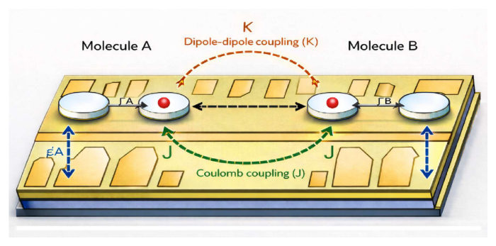
<figcaption class="paper-figure-caption"><b>Fig 1.</b> Fig. 1 schematic of the two dipole-dipole-coupled DQD molecules with the four coupling parameters Γk, εk, K, and J.</figcaption>
</figure>
<figure class="paper-figure-card">
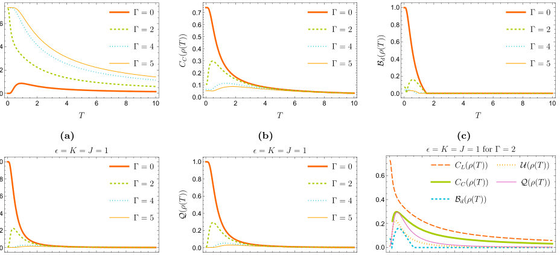
<figcaption class="paper-figure-caption"><b>Fig 2.</b> Fig. 2 Finite-temperature variation of localized coherence CL(ρ(T)) (2a), collective coherence CC(ρ(T)) (2b), Bures distance entanglement Bd(ρ(T)) (2c), local quantum uncertainty U(ρ(T)) (2d), local quantum Fisher information Q(ρ(T)) (2e) for different values of Γ. The remaining Hamiltonian parameters are fixed at ε = J = K = 1. Their comparison is provided in (2f) for fixed Γ = 2 and ε = J = K = 1.</figcaption>
</figure>
<figure class="paper-figure-card">
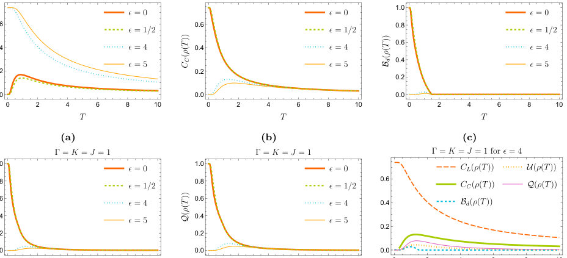
<figcaption class="paper-figure-caption"><b>Fig 3.</b> Fig. 3 Finite-temperature variation of localized coherence CL(ρ(T)) (3a), collective coherence CC(ρ(T)) (3b), Bures distance entanglement Bd(ρ(T)) (3c), local quantum uncertainty U(ρ(T)) (3d), local quantum Fisher information Q(ρ(T)) (3e) for some values of the parameter ε. The remaining Hamiltonian parameters are fixed at Γ = J = K = 1. Their comparison is provided in (3f) for fixed ε = 4 and Γ = J = K = 1.</figcaption>
</figure>
<figure class="paper-figure-card">

<figcaption class="paper-figure-caption"><b>Fig 4.</b> Figure 3 shows the effect of the energy detuning parameter ε on the thermal behavior of</figcaption>
</figure>
<figure class="paper-figure-card">

<figcaption class="paper-figure-caption"><b>Fig 5.</b> Fig. 4 Finite-temperature variation of localized coherence CL(ρ(T)) (4a), collective coherence CC(ρ(T)) (4b), Bures distance entanglement Bd(ρ(T)) (4c), local quantum uncertainty U(ρ(T)) (4d), local quantum Fisher information Q(ρ(T)) (4e) for some fixed values of the coulomb-coupling strength J. The other parameters are fixed at Γ = ε = K = 1. Their comparison is provided in (4f) for fixed J = 3 and Γ = ε = K = 1.</figcaption>
</figure>
</div>

<p><strong>Summary.</strong> This paper analyzes the thermal stability of quantum coherence and entanglement in two coupled electron systems within double quantum dots. It demonstrates that dipole-dipole coupling is superior to other mechanisms for protecting these non-classical resources from temperature-induced decay. The findings guide the design of robust solid-state qubits by identifying optimal parameter regimes.</p>
<p><strong>Why it may be interesting.</strong> This work provides a detailed quantitative comparison of multiple metrics for quantifying non-classical correlations, offering specific guidelines on which physical interactions ($K$ vs $J$) are most robust against thermal decoherence in solid-state qubits.</p>
<details>
<summary>Detailed structure</summary>
<p><strong>Main problem.</strong> The study investigates how basis-independent quantum coherence and various correlation-based quantum resources decay under thermalization in a coupled electron system.</p>
<p><strong>Main result.</strong> Dipole-dipole coupling ($K$) is the most effective parameter for protecting these quantum resources against temperature increases, significantly extending the entanglement sudden death temperature. The combined action of $K$ and Coulomb repulsion ($J$) is crucial for maintaining high levels of coherence and correlation.</p>
<p><strong>Method.</strong> The authors analyze the thermal dynamics by calculating various quantum measures—including basis-independent coherence ($   ext{CL},    ext{CC}$), Bures distance entanglement, Local Quantum Uncertainty ($U$), and local quantum Fisher Information ($Q$)—as functions of temperature and coupling strengths.</p>
<p><strong>Model / system.</strong> The system models two spatially separated double quantum-dot (DQD) molecules containing single electrons. The interactions include inter-electronic Coulomb repulsion ($J$) and dipole-dipole coupling ($K$), alongside tunneling ($\Gamma$) and energy detuning ($\epsilon$).</p>
<p><strong>Key observables.</strong> Basis-independent coherence ($ ext{CL},    ext{CC}$), Bures distance entanglement ($   ext{Bd}$), Local Quantum Uncertainty ($U$), and local quantum Fisher Information ($Q$).</p>
<p><strong>Important parameters / regimes.</strong> Dipole-dipole coupling ($K$), Coulomb repulsion ($J$), Inter-dot tunneling ($\Gamma$), Energy detuning ($\epsilon$), and Temperature ($T$).</p>
<p><strong>Assumptions / limitations.</strong> The analysis is performed using the Gibbs state $
ho(T) = \exp(-\hat{H}/k_BT)/Z$ for finite temperature studies.</p>
<p><strong>Figures summary.</strong> Figures illustrate how quantum resources depend on parameters like $J$ and $K$, showing that increasing $K$ dominates the protection of correlations, while tunneling ($\Gamma$) generally degrades collective coherence.</p>
<p><strong>Paper structure.</strong> The paper reviews the theoretical measures used (Sec. 2), details the physical model (Sec. 3), presents the results analyzing parameter dependence (Sec. 4), and concludes with implications for quantum resource management (Sec. 5).</p>
</details>
<details>
<summary>Abstract</summary>
<p>This work examines the thermal dynamics of basis-independent quantum coherence and correlation-based quantum resources for two dipole-dipole-coupled electrons confined in spatially separated quantum-dot (QD) molecules. Single-dot quantum superpositions and inter-subsystem coherence are characterized by using localized and collective coherence. Quantum correlations between the two double quantum dots are quantified by employing Bures distance entanglement, Local quantum uncertainty (LQU), and local quantum Fisher Information (LQFI). The findings show that dipole-dipole coupling $K$ is the most effective protective parameter, extending the entanglement sudden death temperature, diminishing the local quantum superpositions and enhancing the collective coherence. The dipole-dipole interaction has also a crucial impact on protecting LQU and LQFI beyond the entanglement sudden death temperature. Coulomb repulsion $J$ reinforces this protection through an independent channel, projecting the thermal state onto the entangled $\{|0_A 1_B\rangle,|1_A 0_B\rangle\}$ subspace; their combined action is required to approach the entanglement maximum, and it enhances collective coherence and extends the temperature range over which LQU and LQFI remain appreciable. Energy detuning $\varepsilon$ can enhance localized coherence but paradoxically accelerates the entanglement sudden death and quenches LQU and LQFI by weakening two-body correlations. Inter-dot tunneling $Γ$ enhances local superpositions at low temperature, but it reduces collective coherence, lowers the entanglement sudden death temperature, and disrupts other nonclassical correlations.</p>
</details>
<p><sub><a href="#top">↑ back to top</a></sub></p>

<p><a id="paper-2607.20959"></a></p>
<h3 id="large-deviations-in-quantum-dynamics-and-complexity"><a href="http://arxiv.org/abs/2607.20959v1">Large deviations in quantum dynamics and complexity</a></h3>
<p><strong>Authors:</strong> Xiangyu Cao, Jorge Kurchan<br>
<strong>Type:</strong> theory · <strong>Category:</strong> statistical mechanics · <strong>PDF:</strong> <a href="https://arxiv.org/pdf/2607.20959v1">https://arxiv.org/pdf/2607.20959v1</a><br>
<strong>Analysis basis:</strong> full PDF text, analyzed in chunks
<strong>Topic relevance:</strong> 🔥 <code>measurement-induced transitions</code> <strong>4/5</strong> · 🔥 <code>quantum measurements</code> <strong>4/5</strong> · <code>methods for driven-dissipative</code> <strong>3/5</strong> · <code>non-equilibrium dynamics</code> <strong>3/5</strong> · <code>Keldysh / 2PI / non-Gaussian methods</code> <strong>2/5</strong> · <code>entanglement &amp; information structure</code> <strong>2/5</strong> · <code>non-equilibrium universality</code> <strong>2/5</strong> · <code>analog quantum simulation</code> <strong>1/5</strong> · <code>correlated / nonlocal dissipation</code> <strong>1/5</strong> · <code>driven-dissipative phase transition</code> <strong>1/5</strong> · <code>exotic spin models in light-matter</code> <strong>1/5</strong> · <code>scars &amp; prethermalization</code> <strong>1/5</strong></p>
<div class="figure-strip-hint">↔ Scroll figures horizontally</div>
<div class="paper-figures-scroll">
<figure class="paper-figure-card">

<figcaption class="paper-figure-caption"><b>Fig 1.</b> Figure 1: Full distribution and generating function of the total magneti- zation M in the kicked Ising model (5) in a quench dynamics starting from |ψ(t = 0)〉 = | ↑↑ ... ↑〉. (a) the rescaled generating function N −1 eλM</figcaption>
</figure>
<figure class="paper-figure-card">

<figcaption class="paper-figure-caption"><b>Fig 2.</b> Figure 2: Large deviation of the outcomes time sequence in the kicked Ising model (with N = 18 qubits), where the the total magnetization is measured projectively at every timestep. (a) The outcomes time sequence of a single realization, starting from the Néel state |ψ〉= | ↑↓↑↓...〉. (b) The distribution of the outcomes with t ≤tmax, tmax = 102,104,106, compared with the binomial distribution.</figcaption>
</figure>
<figure class="paper-figure-card">

<figcaption class="paper-figure-caption"><b>Fig 3.</b> Figure 3: Return probability in the kicked chaotic Ising model of size N = 5 and N = 7 in the longtime regime, with initial state |ψ〉= | ↑↑... ↑〉. (a) Return probability as function of time. (b) The time distribution Ptmax for tmax = 103,105,107 compared to prediction (29), and the solution of the Mattis model (25)-(28).</figcaption>
</figure>
<figure class="paper-figure-card">

<figcaption class="paper-figure-caption"><b>Fig 4.</b> Figure 4: Spectral form factor (SFF) in the kicked chaotic Ising model of size N = 5 and N = 7 in the longtime regime, with initial state |ψ〉= | ↑↑... ↑〉. (a) SFF as function of time. (b) The time distribution Ptmax for tmax = 103,105,107 compared to prediction (29), and the solution of the Mattis model (25)-(28). The inset plots the entropy density and shows the regions explored numerically.</figcaption>
</figure>
<figure class="paper-figure-card">

<figcaption class="paper-figure-caption"><b>Fig 5.</b> Figure 5: Rare fluctuations of the expectation value 〈A〉t = 〈ψ(t)|A|ψ(t)〉in the kicked Ising model (5) of size N = 6,7,8, with |ψ〉= | ↑↑... ↑〉and A = Z⌊N/2⌋. (a) Time evolution of the expectation value up to t = 105. (b) We take the histogram of the expectation values for t ∈[10,106], take the log, divide by D = 2N, and subtract the maximum value. The resulting large deviation rate for different N agrees with each other, modulo a cutoff.</figcaption>
</figure>
</div>

<p><strong>Summary.</strong> This paper develops a theory linking large deviation functions in quantum dynamics to a measure of quantum complexity. By comparing three definitions—full distribution, measurement outcomes, and expectation values—the authors find that while some quantities equilibrate rapidly, others exhibit extremely slow saturation times ($\exp(e^N)$). This time dependence is proposed as the quantitative signature of complex quantum evolution.</p>
<p><strong>Why it may be interesting.</strong> This work provides a rigorous theoretical framework to quantify 'quantum complexity' not through entanglement entropy alone, but by analyzing the time scales required for rare fluctuations in observables to saturate their limiting distributions.</p>
<details>
<summary>Detailed structure</summary>
<p><strong>Main problem.</strong> The study investigates how different definitions of large deviations manifest in many-body quantum dynamics, proposing that their time evolution provides a measure of quantum complexity.</p>
<p><strong>Main result.</strong> While the full distribution equilibrates quickly ($t \sim O(1)$), distributions derived from continuous monitoring or expectation values exhibit much slower saturation times ($ ext{t}_{\max} \sim e^N$ or $\exp(e^N)$), which is proposed as a complexity measure.</p>
<p><strong>Method.</strong> The authors employ large deviation theory, analyzing generating functions for observables and mapping the long-time behavior onto equilibrium statistical mechanics models (like Mattis models).</p>
<p><strong>Model / system.</strong> The analysis uses the kicked Ising model as a primary example system. The dynamics are analyzed in the thermodynamic limit ($N 	o \infty$) by relating quantum expectation values to classical spin systems on a torus.</p>
<p><strong>Key observables.</strong> Full distribution of extensive observables, outcome distributions from continuous monitoring, and expectation value distributions ($\langle A 
angle_t$).</p>
<p><strong>Important parameters / regimes.</strong> System size $N$, time $ ext{t}_{\max}$, and the characteristic scales $O(1)$, $e^N$, and $\exp(e^N)$.</p>
<p><strong>Assumptions / limitations.</strong> The analysis often relies on mapping quantum dynamics to classical statistical ensembles (like the XY model) in the long-time limit, and assumes certain thermalization properties.</p>
<p><strong>Figures summary.</strong> Figures illustrate the convergence of rescaled generating functions at $t \sim O(1)$ for the full distribution, while other figures show time evolution plots comparing measured distributions to predictions from Mattis models or binomial statistics.</p>
<p><strong>Paper structure.</strong> The paper systematically compares three definitions of large deviations. It first shows rapid equilibration for the full observable distribution. Subsequently, it analyzes continuous monitoring and expectation values, deriving distinct, much slower saturation timescales that are interpreted as measures of quantum complexity.</p>
</details>
<details>
<summary>Abstract</summary>
<p>We study three definitions of large deviation in many-body quantum dynamics: (i) via the full distribution of an extensive observable, (ii) via the distribution of measurement outcomes (from a continuous monitoring of the observable) over a time interval $t \le t_{\max}$, and (iii) via the distribution of expectation values over $t \le t_{\max}$. In generic systems without conservation laws, the large deviation function (i) reaches its longtime limit at $t \sim \mathcal{O}(1)$, independently of system size $N$. (ii) and (iii) reach their longtime limit at $t \sim e^{ N}$ and $t \sim \exp(e^{N})$, respectively. Before that, there is a {\it sharp} frontier between the explored and unexplored outcomes/expectation values; their distribution equals the longtime limit truncated at values that drift with $t_{\max}$. We propose that the evolution of these values with $t_{\max}$ provides a measure of quantum complexity.</p>
</details>
<p><sub><a href="#top">↑ back to top</a></sub></p>

<p><a id="paper-2607.21536"></a></p>
<h3 id="beyond-calabrese-cardy-scaling-exceptional-point-sensitivity-from-the-de-sitter-rt-surface"><a href="http://arxiv.org/abs/2607.21536v1">Beyond Calabrese-Cardy Scaling: Exceptional-Point Sensitivity from the de Sitter RT Surface</a></h3>
<p><strong>Authors:</strong> Kuang-Hung Chou<br>
<strong>Type:</strong> theory · <strong>Category:</strong> statistical mechanics · <strong>PDF:</strong> <a href="https://arxiv.org/pdf/2607.21536v1">https://arxiv.org/pdf/2607.21536v1</a><br>
<strong>Analysis basis:</strong> full PDF text, analyzed in chunks
<strong>Topic relevance:</strong> 🔥 <code>entanglement &amp; information structure</code> <strong>4/5</strong> · <code>driven-dissipative phase transition</code> <strong>3/5</strong> · <code>methods for driven-dissipative</code> <strong>3/5</strong> · <code>non-equilibrium universality</code> <strong>3/5</strong> · <code>correlated / nonlocal dissipation</code> <strong>2/5</strong> · <code>non-equilibrium dynamics</code> <strong>2/5</strong> · <code>Frenkel-Kontorova</code> <strong>1/5</strong> · <code>Keldysh / 2PI / non-Gaussian methods</code> <strong>1/5</strong> · <code>Kondo &amp; dissipative impurity</code> <strong>1/5</strong> · <code>analog quantum simulation</code> <strong>1/5</strong></p>
<div class="figure-strip-hint">↔ Scroll figures horizontally</div>
<div class="paper-figures-scroll">
<figure class="paper-figure-card">

<figcaption class="paper-figure-caption"><b>Fig 1.</b> FIG. 2: Schematic extremal surfaces in the emergent geometries. (a) In AdS, the boundary-to-boundary RT surface connects the two endpoints of the interval A. (b) In dS spacetime, the timelike extremal geodesics extend toward past infinity, corresponding to the IR endpoint of the RG circuit.</figcaption>
</figure>
<figure class="paper-figure-card">

<figcaption class="paper-figure-caption"><b>Fig 2.</b> FIG. 1: Microscopic scaling of the residual entropy in the two-legged nH SSH model. (a) Entanglement entropy as a function of subsystem size ℓA. Curves with the same ∆L collapse, while changing ∆L produces an interval-independent vertical shift δ log(∆L). (b) One-site entropy as a function of log L at fixed ∆= 10−8, with a fitted slope 0.999. (c) One-site entropy as a function of log ∆at fixed L = 100, with a fitted slope 0.995. (d) Half-chain entropy as a function of log L at fixed ∆= 10−8, with a fitted slope 0.333, consistent with SL/2 = 1</figcaption>
</figure>
<figure class="paper-figure-card">

<figcaption class="paper-figure-caption"><b>Fig 3.</b> FIG. 3: Finite-depth emergent spacetimes drawn on a disk, with the radial direction representing the RG depth and the attempted product-state endpoint at the center. (a) In AdS, the boundary-to-boundary RT curve can turn around before reaching the singular core. (b) In de Sitter spacetime, the timelike extremal geodesics extend toward the IR endpoint, so the singular core enters the variational problem and deforms the full extremal trajectory.</figcaption>
</figure>
<figure class="paper-figure-card">

<figcaption class="paper-figure-caption"><b>Fig 4.</b> FIG. 4: Residual entropy of the two-site IR state. (a) In the PBC dS/MERA network, extremal curves for different boundary intervals follow different bulk paths but terminate at the same pair of IR poles, giving the same IR contribution to every interval. (b) SIR versus log L at fixed ∆= 10−8. (c) SIR versus log ∆at fixed L = 100. For (b) and (c), we set (v, w) = (2, 1); both linear fits give a slope 0.999, confirming SIR = log(∆L) + s′ 0.</figcaption>
</figure>
</div>

<p><strong>Summary.</strong> The paper shows that entanglement entropy in non-Hermitian critical chains near exceptional points acquires an extra residual term proportional to $\log(\Delta L)$. This unique feature arises because the underlying physics generates a de Sitter geometry, forcing the entanglement calculation to sense the system's finite energy gap ($\Delta$) in a way that Hermitian systems cannot.</p>
<p><strong>Why it may be interesting.</strong> This work provides a powerful diagnostic tool for characterizing quantum critical points in non-Hermitian systems, linking topological features (like gap sensitivity) directly to emergent spacetime geometry (dS vs. AdS).</p>
<details>
<summary>Detailed structure</summary>
<p><strong>Main problem.</strong> To investigate entanglement entropy scaling beyond standard Calabrese-Cardy predictions, specifically revealing an additional sensitivity to a small energy gap ($\Delta$) in non-Hermitian critical chains near exceptional points (EPs).</p>
<p><strong>Main result.</strong> Non-Hermitian criticality introduces a residual entropy term, $S_{	ext{res}} = \log(\Delta L)$, into the entanglement entropy that is absent in Hermitian systems. This term signifies long-range entanglement left over after finite-depth renormalization group flow.</p>
<p><strong>Method.</strong> The analysis uses entanglement entropy as a probe, comparing holographic descriptions derived from Anti-de Sitter (AdS) vs. de Sitter (dS) geometries generated via continuous MERA renormalization group flow.</p>
<p><strong>Model / system.</strong> The study focuses on non-Hermitian critical chains, exemplified by the two-legged nH Su–Schrieffer–Heeger (SSH) model. The comparison is drawn between unitary (AdS) and non-unitary (dS) quantum field theories.</p>
<p><strong>Key observables.</strong> Entanglement entropy ($S_A(\ell)$), residual entropy term ($\log(\Delta L)$), and the gap ($\Delta$).</p>
<p><strong>Important parameters / regimes.</strong> System size ($L$), subsystem length ($\ell_A$), and the small energy gap ($\Delta$) near the exceptional point.</p>
<p><strong>Assumptions / limitations.</strong> The analysis relies on extending cMERA to non-unitary critical states, generating an emergent dS geometry whose extremal surface reaches the IR endpoint.</p>
<p><strong>Figures summary.</strong> Figures illustrate how the entanglement entropy scaling differs between AdS (where the RT curve bypasses the singularity) and dS (where geodesics reach the singular IR core), leading to a measurable vertical offset in the latter case.</p>
<p><strong>Paper structure.</strong> The paper establishes the standard Calabrese-Cardy scaling, then introduces non-Hermitian criticality near an EP. It develops the holographic connection by comparing AdS/dS geometries and uses cMERA flow analysis to derive the residual entropy term $\log(\Delta L)$ from the IR endpoint structure.</p>
</details>
<details>
<summary>Abstract</summary>
<p>Entanglement entropy at one-dimensional criticality typically follows the Calabrese-Cardy scaling. In non-Hermitian critical chains near exceptional points, however, we show that the biorthogonal entropy of a finite system retains an additional sensitivity to a small energy gap \(Δ\) even when \(Δ< 1/L\). On top of the usual Calabrese-Cardy term, we find an interval-independent contribution \(S_{\rm res}=\log(ΔL)\), visible as a vertical offset and detectable even for a one-site subsystem. This behavior has no Hermitian analogue: a sub-finite-size gap is effectively invisible to entanglement in unitary critical chains, whereas here the entropy continues to resolve such a gap through its dependence on \(ΔL\). We interpret the result within the de Sitter geometry generated by non-unitary continuous multiscale entanglement renormalization: because the dS extremal surface reaches the IR endpoint, entanglement necessarily retains the endpoint contribution. On a finite ring, a regular circuit cannot terminate at a one-site product state and instead leaves an entangled two-site IR state. Computing the entanglement of the IR state recovers the same \(\log(ΔL)\) term, identifying this additional long-range entanglement as the residual entropy left after finite-depth disentangling.</p>
</details>
<p><sub><a href="#top">↑ back to top</a></sub></p>

<p><a id="paper-2607.21226"></a></p>
<h3 id="entanglement-asymmetry-and-quantum-mpemba-effect-for-kramers-wannier-duality"><a href="http://arxiv.org/abs/2607.21226v1">Entanglement asymmetry and quantum Mpemba effect for Kramers-Wannier duality</a></h3>
<p><strong>Authors:</strong> Milo Vescovo, Pasquale Calabrese, Filiberto Ares<br>
<strong>Type:</strong> theory · <strong>Category:</strong> statistical mechanics · <strong>PDF:</strong> <a href="https://arxiv.org/pdf/2607.21226v1">https://arxiv.org/pdf/2607.21226v1</a><br>
<strong>Analysis basis:</strong> full PDF text, analyzed in chunks
<strong>Topic relevance:</strong> 🔥 <code>entanglement &amp; information structure</code> <strong>4/5</strong> · 🔥 <code>non-equilibrium dynamics</code> <strong>4/5</strong> · <code>methods for driven-dissipative</code> <strong>3/5</strong> · <code>non-equilibrium universality</code> <strong>3/5</strong> · <code>driven-dissipative phase transition</code> <strong>2/5</strong> · <code>Keldysh / 2PI / non-Gaussian methods</code> <strong>1/5</strong> · <code>analog quantum simulation</code> <strong>1/5</strong> · <code>correlated / nonlocal dissipation</code> <strong>1/5</strong> · <code>scars &amp; prethermalization</code> <strong>1/5</strong></p>
<div class="figure-strip-hint">↔ Scroll figures horizontally</div>
<div class="paper-figures-scroll">
<figure class="paper-figure-card">

<figcaption class="paper-figure-caption"><b>Fig 1.</b> Figure 1: (a) Tr(ρAˆρA) as function of the subsystem size ℓfor the ground state of the quantum Ising chain for different magnetic fields h, showing the exponential decay. The symbols are the exact values, computed using the corresponding formula in Eq. (31). The solid lines represent the asymptotic behavior in Eqs. (42)-(43), neglecting the subleading terms. (b) The symbols are obtained from linear fits to the exact numerical data while the solid curve corresponds to the prediction of Eq. (43).</figcaption>
</figure>
<figure class="paper-figure-card">

<figcaption class="paper-figure-caption"><b>Fig 2.</b> Figure 2: (a) Rényi-2 KW entanglement asymmetry ∆S(2) A as a function of the subsys- tem size ℓin the ground state of the quantum Ising chain for different magnetic fields h. (b) ∆S(2) A as a function of h for ℓ= 25, 45, 100. In both panels, the symbols show the exact numerical values obtained from the correlation matrices at finite ℓusing Eq. (31), while the solid curves correspond to the asymptotic expression (46), with the traces evaluated from Eq. (44) in the limit ℓ→∞.</figcaption>
</figure>
<figure class="paper-figure-card">

<figcaption class="paper-figure-caption"><b>Fig 3.</b> Figure 3: Rényi KW entanglement asymmetry for several Rényi indices n as function of the magnetic field h in the ground state of the quantum Ising chain. (a) Asymptotic behavior in Eqs. (51)-(52), including the analytic continuation for n = 1. (b) Comparison with exact numerics at finite ℓfor n = 3, showing the typical dip at criticality, signaling the restoration of symmetry not captured by Eq. (51) as in Fig. 2 for n = 2.</figcaption>
</figure>
<figure class="paper-figure-card">

<figcaption class="paper-figure-caption"><b>Fig 4.</b> Figure 4: (a) Time evolution of Rényi-2 KW entanglement asymmetry ∆S(2) A (t) for a quench to the critical point of the quantum Ising chain for different values of the initial magnetic field h. The symbols are the exact numerical results for ℓ= 50, computed from the correlation matrix using Eq. (31). The full lines represent the asymptotic results from the quasiparticle picture. (b) Time evolution of ∆S(2) A (t) for the representative quench from h0 = 0.7 and several subsystem sizes ℓ(symbols). The quasiparticle predictions are shown as solid lines. The figure clearly illustrates that the initial transient is an O(1) effect, and is therefore not captured by the quasiparticle picture. It...</figcaption>
</figure>
<figure class="paper-figure-card">

<figcaption class="paper-figure-caption"><b>Fig 5.</b> Figure 5: Time evolution of the traces entering the Rényi-2 Kramers–Wannier entan- glement asymmetry (41) after a quench from h0 = 2 to the critical point. Here the susbystem size is ℓ= 50. The symbols are the exact numerical values, computed us- ing the formulas in Eq. (31), while the curves represent the quasiparticle predictions in Eqs. (55) and (60). Observe that the quasiparticle prediction for Trρ2 A and its KW dual Trˆρ2 A coincide for any initial magnetic field h0.</figcaption>
</figure>
</div>

<p><strong>Summary.</strong> This theoretical paper introduces the Kramers-Wannier entanglement asymmetry as a measure to probe non-invertible symmetries in quantum many-body systems like the Ising chain. Key findings include demonstrating that this asymmetry decays dynamically during quenches, revealing a novel quantum Mpemba effect where far-from-equilibrium states relax faster than near-equilibrium ones.</p>
<p><strong>Why it may be interesting.</strong> The work provides a powerful new diagnostic tool ($\Delta S$) for probing non-invertible symmetries in many-body systems beyond equilibrium, which is highly relevant for understanding thermalization and dynamics in quantum materials.</p>
<details>
<summary>Detailed structure</summary>
<p><strong>Main problem.</strong> The study investigates the fate of the Kramers-Wannier duality, a non-invertible symmetry, when moving away from critical points and into non-equilibrium dynamics.</p>
<p><strong>Main result.</strong> The authors demonstrate the emergence of a quantum Mpemba effect, where states initially farther from equilibrium restore the broken symmetry faster than those prepared closer to it. They also characterize the asymptotic decay of entanglement asymmetry during quenches.</p>
<p><strong>Method.</strong> The analysis employs quantum information measures, specifically the Kramers-Wannier entanglement asymmetry ($\Delta S$), calculated using techniques involving dual reduced density matrices and replica tricks for fermionic systems.</p>
<p><strong>Model / system.</strong> The primary model is the transverse-field Ising chain, analyzed through its mapping to a quadratic fermionic Hamiltonian. The study examines both equilibrium ground states and non-equilibrium dynamics following quantum quenches.</p>
<p><strong>Key observables.</strong> Kramers-Wannier entanglement asymmetry ($\Delta S$), which quantifies the breaking of the non-invertible symmetry; the asymptotic decay rate $\sim t^{-3}$.</p>
<p><strong>Important parameters / regimes.</strong> The transverse field $h$, with criticality occurring at $h=1$; subsystem size $\ell$; and time evolution parameters characterizing the initial quench state ($h_0$).</p>
<p><strong>Assumptions / limitations.</strong> The derivation of asymptotic decay relies on conjectures regarding the Widom-Szegő formula, and the procedure for defining the dual reduced density matrix ($\hat{
ho}_A$) is adopted as an alternative to direct duality application.</p>
<p><strong>Figures summary.</strong> Not specified by notes; however, results show crossovers in equilibrium asymmetry and a time decay profile demonstrating the Mpemba effect during quenches.</p>
<p><strong>Paper structure.</strong> The paper progresses from defining the KW entanglement asymmetry for non-invertible symmetries (equilibrium analysis) to studying its behavior after quantum quenches. The core development involves deriving the long-time asymptotics of this asymmetry, leading to the identification and characterization of the Mpemba effect.</p>
</details>
<details>
<summary>Abstract</summary>
<p>The Kramers-Wannier duality is the prototypical example of a non-invertible symmetry, yet little is known about its fate away from criticality and out of equilibrium. We introduce the Kramers-Wannier entanglement asymmetry, a quantum-information measure that quantifies the breaking of this non-invertible symmetry in the transverse-field Ising chain. We first investigate its equilibrium properties, showing that it exhibits a striking crossover between the ordered and disordered phases together with a pronounced dip at the critical point that becomes increasingly sharp with subsystem size. We then study quantum quenches from both gapped phases to criticality and show that the Kramers-Wannier entanglement asymmetry decays to zero, signaling the dynamical restoration of the non-invertible symmetry. Remarkably, we uncover the emergence of a quantum Mpemba effect: under suitable conditions, states initially farther from equilibrium restore the Kramers-Wannier symmetry faster than states prepared closer to it. We provide both analytical and numerical evidence for this phenomenon and identify the mechanism responsible for its occurrence. Our work establishes entanglement asymmetry as a powerful probe of non-invertible symmetries beyond equilibrium and opens new perspectives on the dynamics of dualities in quantum many-body systems.</p>
</details>
<p><sub><a href="#top">↑ back to top</a></sub></p>

<p><a id="paper-2607.20640"></a></p>
<h3 id="unitary-math153math-designs-without-hamiltonian-quenches"><a href="http://arxiv.org/abs/2607.20640v1">Unitary $k$-designs without Hamiltonian quenches</a></h3>
<p><strong>Authors:</strong> Pratik Nandy<br>
<strong>Type:</strong> theory · <strong>Category:</strong> statistical mechanics · <strong>PDF:</strong> <a href="https://arxiv.org/pdf/2607.20640v1">https://arxiv.org/pdf/2607.20640v1</a><br>
<strong>Analysis basis:</strong> full PDF text, analyzed in chunks
<strong>Topic relevance:</strong> 🔥 <code>non-equilibrium dynamics</code> <strong>4/5</strong> · <code>analog quantum simulation</code> <strong>3/5</strong> · <code>entanglement &amp; information structure</code> <strong>3/5</strong> · <code>non-equilibrium universality</code> <strong>3/5</strong> · <code>methods for driven-dissipative</code> <strong>2/5</strong> · <code>scars &amp; prethermalization</code> <strong>2/5</strong> · <code>Keldysh / 2PI / non-Gaussian methods</code> <strong>1/5</strong> · <code>correlated / nonlocal dissipation</code> <strong>1/5</strong> · <code>driven-dissipative phase transition</code> <strong>1/5</strong></p>
<div class="figure-strip-hint">↔ Scroll figures horizontally</div>
<div class="paper-figures-scroll">
<figure class="paper-figure-card">

<figcaption class="paper-figure-caption"><b>Fig 1.</b> FIG. 1. Diagrammatic illustration of the two-Pauli-kick (2PK) protocol. The system evolves under a fixed Hamil- tonian H for a duration t1, followed by a Pauli kick. It then evolves under the same Hamiltonian for a duration t2, after which the same Pauli kick is applied again, and the evolution continues for a duration t3. The arrow dictates the direction of the operation. The resulting temporal ensemble approaches the Haar ensemble, characterized by the frame potential (3).</figcaption>
</figure>
<figure class="paper-figure-card">

<figcaption class="paper-figure-caption"><b>Fig 2.</b> FIG. 2. Left panel: Frame potential F (k) for the GXE (red for GOE and blue for GUE) under the 1PK protocol. Right panel: Corresponding results for the 2PK protocol. The cho- sen Pauli operator has a weight (number of non-identities) of 6. The gray and black dashed lines denote the analytical pre- diction in (7) with Λ = 3 (GOE), Λ = 2 (GUE), and the Haar value k!, respectively. The long-time limit is obtained by taking T = 106. The system size is L = 28, and the results are averaged over 104 independent temporal realizations.</figcaption>
</figure>
<figure class="paper-figure-card">

<figcaption class="paper-figure-caption"><b>Fig 3.</b> FIG. 3. Left panel: Frame potential for the Majorana and Spin SYK under the 1PK protocol. Right panel: Corre- sponding results for the 2PK protocol. The dashed lines de- note the analytical prediction in (7) and the Haar value k!, respectively. The chosen Pauli operator has a weight (number of non-identities) of 6 and is non-commuting with the Hamil- tonian. The long-time limit is T = 106. For Majorana SYK4, NMaj = 16 (GOE) [29], and for the Spin SYK, NSpin = 8 (GUE) [26, 27]. In all cases, the results are averaged over 105</figcaption>
</figure>
<figure class="paper-figure-card">

<figcaption class="paper-figure-caption"><b>Fig 4.</b> FIG. 4. Left panel: Finite temperature frame potential (12) for the GUE under the 2PK protocol for different β. The Haar result k! holds for β = 0; otherwise, the inequality (13) holds for generic β &gt; 0. Right panel: Logarithm of the frame potential with β for different k. In both plots, the point markers are the numerical results while the solid lines are the analytic results (13). The dashed lines indicate the slope αk = 4k, as obtained from (15). The long-time limit is obtained by taking T = 106. The system size is fixed at L = 28, and the results are averaged over 104 independent temporal realizations.</figcaption>
</figure>
</div>

<p><strong>Summary.</strong> The paper introduces the Two-Pauli-Kick (2PK) protocol as an efficient method to generate approximate unitary k-designs using only a single chaotic Hamiltonian. By analyzing the frame potential across GXE and SYK models, the authors prove that this protocol successfully mimics Haar randomness, thereby circumventing the need for multiple independent quenches in quantum chaos studies.</p>
<p><strong>Why it may be interesting.</strong> This work provides a powerful theoretical tool (the 2PK protocol) applicable to understanding quantum chaos and scrambling in strongly interacting systems, which is highly relevant for AMO physics studying thermalization dynamics.</p>
<details>
<summary>Detailed structure</summary>
<p><strong>Main problem.</strong> The primary goal is to efficiently generate approximate unitary k-designs, which mimic Haar randomness, without relying on multiple independent Hamiltonian quenches.</p>
<p><strong>Main result.</strong> A novel Two-Pauli-Kick (2PK) protocol using a single chaotic Hamiltonian is shown to successfully generate these designs, confirmed by the convergence of the frame potential to the Haar value for various models.</p>
<p><strong>Method.</strong> The analysis uses the k-th frame potential, $F^{(k)}$, calculated from the temporal ensemble average of unitary evolution interspersed with two random Pauli operator insertions. The method extends to finite temperature via canonical definitions involving partition functions.</p>
<p><strong>Model / system.</strong> The study applies to general many-body quantum systems, tested on benchmark models like Gaussian Random Matrix Ensembles (GXE) and complex chaotic systems such as the Sachdev–Ye–Kitaev (SYK) model in both Majorana and spin formulations.</p>
<p><strong>Key observables.</strong> Frame potential $F^{(k)}$, which measures convergence to Haar statistics; finite-temperature generalizations of this potential.</p>
<p><strong>Important parameters / regimes.</strong> The order of the design ($k$), the inverse temperature ($eta$), and the time scale limit ($T 	o \infty$ or large Hilbert space dimension $L$).</p>
<p><strong>Assumptions / limitations.</strong> The protocol requires a chaotic Hamiltonian $H$ such that $[P, H] 
eq 0$. The analysis often relies on asymptotic expansions in $1/d$ (Hilbert space dimension).</p>
<p><strong>Figures summary.</strong> Figures compare the frame potentials for 1PK vs. 2PK protocols across GXE and SYK models, showing the 2PK protocol approaches the Haar value ($k!$). Other figures illustrate finite-size scaling and thermal potential comparisons.</p>
<p><strong>Paper structure.</strong> The paper first introduces the problem of generating $k$-designs without multiple quenches. It then details the 2PK protocol and analyzes its success using frame potentials for GXE and SYK models at zero temperature. Subsequent sections generalize this to finite temperatures, establish rigorous lower bounds, and compare different mathematical definitions of the thermal potential.</p>
</details>
<details>
<summary>Abstract</summary>
<p>Unitary designs provide an efficient means of emulating Haar randomness without the requirement of exponential resources. Hamiltonian quench protocols have recently been shown to generate such designs, but achieving this typically requires multiple independent Hamiltonian quenches, even via temporal ensembles. Here, we show that no Hamiltonian quenches are required: a single chaotic Hamiltonian is sufficient to generate approximate unitary $k$-designs. We introduce a two-Pauli-kick (2PK) protocol, where unitary evolution under a fixed Hamiltonian is interspersed with two Pauli operator insertions (kicks). By evaluating the frame potential, we demonstrate that the resulting ensemble converges to the Haar value, indicating the emergence of approximate unitary designs. We verify this protocol for Gaussian random matrix ensembles, the Sachdev-Ye-Kitaev (SYK) model, and simplified spin (bosonic) SYK models. Furthermore, our protocol admits a canonical definition of finite-temperature frame potentials and establishes the relation with the partition function. We outline a plausible holographic interpretation of our protocol from the dual gravity picture.</p>
</details>
<p><sub><a href="#top">↑ back to top</a></sub></p>

<p><a id="paper-2607.21487"></a></p>
<h3 id="an-on-chip-programmable-mechano-quantum-transducer"><a href="http://arxiv.org/abs/2607.21487v1">An on-chip programmable mechano-quantum transducer</a></h3>
<p><strong>Authors:</strong> Xinrui Zhang, Wei Liu, Duanyu Ma, Lin-Ke Xie, Nai-Jie Guo, Zhongtao Gou, Yifan Wang, Jianxin Xu, Xiaoguang Luo, Zhao Mu, Honglong Chang, Weizheng Yuan, Jian-Shun Tang, Chuan-Feng Li, Guangcan Guo, Tao Ye<br>
<strong>Type:</strong> experiment · <strong>Category:</strong> other · <strong>PDF:</strong> <a href="https://arxiv.org/pdf/2607.21487v1">https://arxiv.org/pdf/2607.21487v1</a><br>
<strong>Analysis basis:</strong> full PDF text, analyzed in chunks
<strong>Topic relevance:</strong> 🔥 <code>spintronics-quantum-optics interface</code> <strong>4/5</strong> · <code>QC/QI experiment</code> <strong>3/5</strong> · <code>quantum measurements</code> <strong>3/5</strong> · <code>driven-dissipative phase transition</code> <strong>2/5</strong> · <code>quantum optics experiment</code> <strong>2/5</strong> · <code>Kondo &amp; dissipative impurity</code> <strong>1/5</strong> · <code>analog quantum simulation</code> <strong>1/5</strong> · <code>exotic spin models in light-matter</code> <strong>1/5</strong> · <code>non-equilibrium dynamics</code> <strong>1/5</strong></p>
<div class="figure-strip-hint">↔ Scroll figures horizontally</div>
<div class="paper-figures-scroll">
<figure class="paper-figure-card">

<figcaption class="paper-figure-caption"><b>Fig 1.</b> Fig. 1 | Architecture of OCPMQT for electrically programmable mechano-</figcaption>
</figure>
<figure class="paper-figure-card">

<figcaption class="paper-figure-caption"><b>Fig 2.</b> Fig. 3 | ODMR readout of cyclic mechano-quantum modulation in OCPMQT</figcaption>
</figure>
<figure class="paper-figure-card">

<figcaption class="paper-figure-caption"><b>Fig 3.</b> Fig. 4 | Quantitative modeling of the voltage-dependent 𝑫 shift in OCPMQT.</figcaption>
</figure>
</div>

<p><strong>Summary.</strong> The authors present an On-chip Programmable Mechano-Quantum Transducer (OCPMQT) that solves the problem of physically separating mechanical actuation from quantum readout in spin defects. By integrating micromechanical actuators onto a chip hosting 2D materials, they demonstrate a direct, programmable transduction pathway where electrical voltage controls measurable strain, which is then read out as a precise shift in the defect's spin resonance frequency.</p>
<p><strong>Why it may be interesting.</strong> This work is highly relevant as it provides an experimental blueprint for integrating classical electromechanical control directly into quantum sensing platforms, which is crucial for scalable solid-state quantum devices.</p>
<details>
<summary>Detailed structure</summary>
<p><strong>Main problem.</strong> The core challenge is integrating physically separated mechanical actuation and quantum readout functions for solid-state spin defects onto a single, on-site platform.</p>
<p><strong>Main result.</strong> They report an On-chip Programmable Mechano-Quantum Transducer (OCPMQT) that deterministically maps electrical control input to measurable shifts in the defect's spin frequency response.</p>
<p><strong>Method.</strong> The system uses voltage-defined micromechanical actuation on a chip-scale device, coupled with Optically Detected Magnetic Resonance (ODMR) spectroscopy for quantum readout.</p>
<p><strong>Model / system.</strong> The platform utilizes 2D van der Waals materials (like hBN) hosting spin defects ($ ext{V}<em ext_III="ext{III">{    ext{B}}^{--}$ or $  ext{V}</em>$). A micromechanical-to-spin-Hamiltonian framework is established to model the coupling between mechanical strain and the defect's zero-field splitting parameter ($D$).}</p>
<p><strong>Key observables.</strong> Strain (down to $0.0080\%$), volumetric force density ($\approx 2.6 	imes 10^4 \, 	ext{N}\cdot	ext{m}^{-3}$), and the shift in the axial zero-field splitting parameter ($D$) resolved via ODMR spectroscopy.</p>
<p><strong>Important parameters / regimes.</strong> Strain levels up to $0.230\%$; force output of $\sim 500 \mu	ext{N}$; modulation of $D$ by $\approx -55 	ext{ MHz}$.</p>
<p><strong>Assumptions / limitations.</strong> The approach assumes that the mechanical strain induced on the lattice can be quantitatively and reversibly transferred to modulate the spin Hamiltonian parameters.</p>
<p><strong>Figures summary.</strong> Figures illustrate the schematic integration (actuator loading defects in hBN), the physical components (SOI wafer structure), energy level diagrams showing $D$ modulation by strain, and comparisons against conventional sensing platforms.</p>
<p><strong>Paper structure.</strong> The paper introduces the need for on-site transduction, details the OCPMQT architecture using micromechanics and 2D materials, presents measurements of mechanical actuation and strain transfer, and concludes by validating a closed-form model linking voltage input to spin frequency output.</p>
</details>
<details>
<summary>Abstract</summary>
<p>Solid-state spin defects encode local perturbations as measurable shifts in spin-transition frequencies, but mechanical actuation and quantum readout remain physically separated, resulting in a discrete measurement setup. Integrating these functions requires an on-site mechano-quantum interface that programs the lattice state of a defect host and quantitatively maps it onto the spin Hamiltonian. Here we first report an on-chip programmable mechano-quantum transducer (OCPMQT) that integrates voltage-defined micromechanical actuation with in situ spin-frequency readout in a two-dimensional van der Waals quantum-defect host. Mechanically programmed lattice states are encoded as shifts in the axial zero-field splitting parameter and resolved by optically detected magnetic resonance (ODMR) spectroscopy. Within a chip volume of 2.05<em>10^-2 cm^3, the transducer accesses ODMR-inferred strains as low as 0.0080% and delivers a volumetric force density of approximately 2.6</em>104 N/m^-3. A micromechanical-to-spin-Hamiltonian framework links on-chip electromechanics, interfacial strain transfer, and strain-spin coupling, enabling the electrical control micromechanical input to be measured directly as spin-frequency response.</p>
</details>
<p><sub><a href="#top">↑ back to top</a></sub></p>

<p><a id="paper-2607.20602"></a></p>
<h3 id="autonomization-of-quantum-systems-and-the-emergence-of-the-work-operator"><a href="http://arxiv.org/abs/2607.20602v1">Autonomization of Quantum Systems and the Emergence of the Work Operator</a></h3>
<p><strong>Authors:</strong> Carlo Cepollaro, Danial Chughtai, Alberto Spalvieri, Marcus Huber, Alberto Rolandi<br>
<strong>Type:</strong> theory · <strong>Category:</strong> statistical mechanics · <strong>PDF:</strong> <a href="https://arxiv.org/pdf/2607.20602v1">https://arxiv.org/pdf/2607.20602v1</a><br>
<strong>Analysis basis:</strong> full PDF text, analyzed in chunks
<strong>Topic relevance:</strong> 🔥 <code>non-equilibrium dynamics</code> <strong>4/5</strong> · <code>methods for driven-dissipative</code> <strong>3/5</strong> · <code>non-equilibrium universality</code> <strong>3/5</strong> · <code>Keldysh / 2PI / non-Gaussian methods</code> <strong>2/5</strong> · <code>driven-dissipative phase transition</code> <strong>2/5</strong> · <code>analog quantum simulation</code> <strong>1/5</strong> · <code>correlated / nonlocal dissipation</code> <strong>1/5</strong> · <code>entanglement &amp; information structure</code> <strong>1/5</strong> · <code>scars &amp; prethermalization</code> <strong>1/5</strong></p>
<div class="figure-strip-hint">↔ Scroll figures horizontally</div>
<div class="paper-figures-scroll">
<figure class="paper-figure-card">

<figcaption class="paper-figure-caption"><b>Fig 1.</b> FIG. 1. Illustration of the autonomization procedure. Left: In the usual non-autonomous description, a qubit is driven by a time-dependent Hamiltonian ˆHS(t), represented here by an externally controlled magnetic field that is changed by a classical agent. The energetic cost and fluctuations of this control are not included in the model. Right: In the autonomous description, the control device is promoted to a quantum system. The qubit interacts with a second system, here depicted as a rotating qudit, whose state selects the effective Hamiltonian acting on the system. The joint evolution is generated by a time-independent Hamiltonian, while the reduced dynamics of the qubit reproduces the...</figcaption>
</figure>
</div>

<p><strong>Summary.</strong> The paper resolves ambiguities in defining 'work' at the quantum level by reformulating time-dependent driving into an autonomous evolution on a larger system incorporating a 'clock.' This yields a unique work operator that satisfies generalized fluctuation theorems, providing a rigorous foundation for quantum thermodynamics.</p>
<p><strong>Why it may be interesting.</strong> This work provides fundamental theoretical tools for analyzing non-equilibrium processes, particularly energy exchange, which is crucial for understanding quantum engines and thermalization in complex quantum materials.</p>
<details>
<summary>Detailed structure</summary>
<p><strong>Main problem.</strong> The central challenge is defining quantum work consistently, as standard approaches fail because they omit the energetic cost of external control fields. The authors address this by developing an autonomous framework for energy transfer.</p>
<p><strong>Main result.</strong> They successfully define a unique quantum work operator that avoids known no-go theorems and derive an operatorial first law applicable to open quantum systems.</p>
<p><strong>Method.</strong> The core method involves 'autonomizing' the time-dependent dynamics by embedding the controlled evolution into an energy-conserving Hamiltonian on a larger composite system (System + Clock).</p>
<p><strong>Model / system.</strong> The model considers a quantum system S driven by a time-dependent Hamiltonian $\hat{H}_S(t)$, which is coupled to an auxiliary 'clock' system C. The dynamics are analyzed both in the non-autonomous and the autonomous (time-independent) pictures.</p>
<p><strong>Key observables.</strong> The work operator ($\hat{W}$), the quantum fluctuation theorem, and distinct operators for work, heat, and internal energy changes on the reduced system.</p>
<p><strong>Important parameters / regimes.</strong> Temperature ($\beta$), time intervals ($\Delta t$, $t_0$), and coupling strengths defining the Hamiltonian interactions.</p>
<p><strong>Assumptions / limitations.</strong> The analysis relies on embedding the control process into a larger quantum description (the clock) to ensure energy conservation, moving beyond classical assumptions of external control.</p>
<p><strong>Figures summary.</strong> Not specified by notes; the structure suggests derivations involving correlation functions and operator identities related to time evolution.</p>
<p><strong>Paper structure.</strong> The paper progresses from identifying the failure of canonical work definitions to proposing the autonomous embedding (Theorem 1), deriving the unique work operator (Theorem 2), establishing a quantum fluctuation theorem (Theorem 3), and finally extending the framework to open systems with an operatorial first law.</p>
</details>
<details>
<summary>Abstract</summary>
<p>Estimation of work at the quantum scale remains a central challenge in quantum thermodynamics. Canonical approaches have a fundamental drawback: they assume classical control of the quantum system, as implicit in a time-dependent Hamiltonian. Yet the energetic cost of implementing this control is omitted and can exceed the system's energy scale by orders of magnitude, calling into question the operational significance of work values. We address this by autonomizing the controlled energy transfer, embedding the driven dynamics into an energy-conserving evolution on a larger quantum system. Work is then unambiguously identified with the energy transferred between the two systems, singling out a unique observable on the driven system: the work operator. We show that the quantum work operator evades a no-go theorem by deriving a quantum fluctuation theorem that recovers the Jarzynski equality in classical scenarios. We incorporate imperfect control and quantify corrections to work statistics. Extending the framework to open quantum systems, we obtain an operatorial first law in which work, heat, and internal-energy changes are represented by distinct operators on the reduced system. Together, these results settle the long-standing debate over whether work is a quantum observable: it is, once the controlling system is included in the description rather than treated as external.</p>
</details>
<p><sub><a href="#top">↑ back to top</a></sub></p>

<p><a id="paper-2607.21169"></a></p>
<h3 id="characterising-extremal-decoherence-by-quantum-measurement-incompatibility"><a href="http://arxiv.org/abs/2607.21169v1">Characterising extremal decoherence by quantum measurement incompatibility</a></h3>
<p><strong>Authors:</strong> Daniel McNulty, William Townsend, Jukka Kiukas<br>
<strong>Type:</strong> theory · <strong>Category:</strong> other · <strong>PDF:</strong> <a href="https://arxiv.org/pdf/2607.21169v1">https://arxiv.org/pdf/2607.21169v1</a><br>
<strong>Analysis basis:</strong> full PDF text, analyzed in chunks
<strong>Topic relevance:</strong> 🔥 <code>quantum measurements</code> <strong>4/5</strong> · <code>correlated / nonlocal dissipation</code> <strong>3/5</strong> · <code>measurement-induced transitions</code> <strong>3/5</strong> · <code>driven-dissipative phase transition</code> <strong>2/5</strong> · <code>entanglement &amp; information structure</code> <strong>2/5</strong> · <code>Keldysh / 2PI / non-Gaussian methods</code> <strong>1/5</strong> · <code>methods for driven-dissipative</code> <strong>1/5</strong> · <code>non-equilibrium dynamics</code> <strong>1/5</strong> · <code>non-equilibrium universality</code> <strong>1/5</strong></p>
<div class="figure-strip-hint">↔ Scroll figures horizontally</div>
<div class="paper-figures-scroll">
<figure class="paper-figure-card">

<figcaption class="paper-figure-caption"><b>Fig 1.</b> FIG. 1. Correspondence between symmetric extremal decoherence and SIC-POVMs. A SIC-POVM M determines the coherence matrix ξ, while an incoherent observable P is specified by the conditional probabilities p(j|n). The pair (P, ξ ◦QMUB) is jointly measurable iff these probabilities arise from a valid POVM F in the SIC representation, i.e. when the associated SIC Born rule expression is non-negative for every state.</figcaption>
</figure>
<figure class="paper-figure-card">

<figcaption class="paper-figure-caption"><b>Fig 2.</b> FIG. 2. Characterising noise through the compatibility region CΛ[O] of a fixed “probe” class of observables O. This region consists of the probes that become jointly measurable with every noisy observable under the channel Λ. With no noise, CId[O] = Otriv; for a general noise channel, CΛ[O] lies between Otriv and O; and for incompatibility-breaking noise Γ, CΓ[O] = O. In this work, we focus on decoherence channels Λξ, for which the natural probe class is the set of incoherent observables, while the incompatibility-breaking reference channel Γ is complete dephasing.</figcaption>
</figure>
<figure class="paper-figure-card">

<figcaption class="paper-figure-caption"><b>Fig 3.</b> FIG. 3. Compatibility regions Cξ[I sc 4 ] for three Heisenberg– Weyl extremals given in the Fourier coordinates (ˆr01, ˆr10, ˆr11) of the shift-covariant observable Pr ∈I sc 4 . The HW family is parameterised by s ∈(0, 1) and ϑ ∈(0, π/2), with coherence matrices given in Eq. (45). The compatibility regions are centred ellipsoids; at the SIC point s2 = 2 − √</figcaption>
</figure>
<figure class="paper-figure-card">

<figcaption class="paper-figure-caption"><b>Fig 4.</b> FIG. 4. Compatibility regions Cξ[I sc 4 ], restricted to shift-covariant observables, for three semi-SIC extremals, shown in the Fourier coordinates (ˆr01, ˆr10, ˆr11) of the covariant seed distribution of Pr. The semi-SIC family is parametrised by β ∈(1/16, 1/12], with coherence matrices given in Eq. (50) and SIC endpoint at β = 1/12. For β &lt; 1/12, the reduced symmetry splits the four outcomes into two inequivalent classes, so the compatibility region is the intersection of two ellipsoids E ± ξ defined in Eq. (F10). The blue and red transparent surfaces are E + ξ and E − ξ , and the dark region is E + ξ ∩E − ξ = Cξ[I sc 4 ]. The tetrahedron is the set of all valid incoherent observables.</figcaption>
</figure>
<figure class="paper-figure-card">

<figcaption class="paper-figure-caption"><b>Fig 5.</b> FIG. 5. Compatibility regions Cξ[I sc 4 ], restricted to shift-covariant observables, for three non-MIC extremals, shown in the Fourier coordinates (ˆr01, ˆr10, ˆr11) of the covariant seed distribution of Pr. The family is parametrised by c = cos2(ϕ/2) ∈(0, 1), with coherence matrices given in Eq. (56). The compatibility region is the intersection of two ellipsoids E ± ξ defined in Eq. (F15), arising from the two inequivalent outcome classes of the covariant observable. The blue and red transparent surfaces are E + ξ and E − ξ , and the dark region is E + ξ ∩E − ξ = Cξ[I sc 4 ]. The tetrahedron corresponds to the set of all valid incoherent observables.</figcaption>
</figure>
</div>

<p><strong>Summary.</strong> This theoretical paper develops an observable-level measure of emergent classicality by quantifying the loss of measurement incompatibility due to decoherence. It introduces the 'compatibility region' as a key diagnostic tool, showing that high-symmetry measurements like SICs maximize this loss. The work provides rigorous mathematical frameworks for analyzing these quantum noise processes.</p>
<p><strong>Why it may be interesting.</strong> This work provides a deep operational link between fundamental quantum concepts—measurement incompatibility and classicality—and concrete mathematical structures (like SICs), which is highly relevant for understanding open quantum systems dynamics beyond simple damping models.</p>
<details>
<summary>Detailed structure</summary>
<p><strong>Main problem.</strong> The paper characterizes emergent classicality by analyzing how decoherence channels destroy quantum measurement incompatibility, providing an observable-level diagnostic tool.</p>
<p><strong>Main result.</strong> Symmetric Informationally Complete (SIC) POVMs are shown to maximize the compatibility volume among extremal decoherence channels, offering a joint measurability criterion for the existence of SICs.</p>
<p><strong>Method.</strong> The core method involves defining and calculating the 'compatibility region' associated with noise channels acting on observables in the Heisenberg picture. This is analyzed using positivity tests derived from operator frames and Gram matrices.</p>
<p><strong>Model / system.</strong> The system models quantum decoherence via noise channels ($\Lambda_\xi$) acting on observables, particularly focusing on extremal channels defined by coherence matrices $\xi$. The analysis uses mathematical tools like rank-one operator frames and geometric interpretations in state space (related to MICs).</p>
<p><strong>Key observables.</strong> Compatibility region volume, measurement incompatibility, coherence matrix ($\xi$), and the structure of POVMs (especially SICs).</p>
<p><strong>Important parameters / regimes.</strong> The dimension $d$ of the Hilbert space; parameters defining the specific type of extremal channel (e.g., Heisenberg-Weyl vs. semi-SIC).</p>
<p><strong>Assumptions / limitations.</strong> The analysis heavily restricts itself to 'extremal' decoherence channels, which simplifies the structure by eliminating convex mixing effects.</p>
<p><strong>Figures summary.</strong> Figures illustrate the correspondence between symmetric extremal decoherence and SIC-POVMs, showing how joint measurability conditions translate into geometric constraints on the compatibility region in state space or Fourier space.</p>
<p><strong>Paper structure.</strong> The paper builds from defining the incompatibility loss via the compatibility region to establishing equivalent mathematical criteria for this region's existence (especially for SIC cases). It then generalizes these findings by analyzing different classes of extremals (Heisenberg-Weyl, semi-SIC) using advanced tools like Fourier analysis and robustness measures.</p>
</details>
<details>
<summary>Abstract</summary>
<p>Decoherence, when viewed in the Heisenberg picture, can turn incompatible measurements into jointly measurable ones. This provides an observable-level description of emergent classicality in terms of the incompatibility destroyed by a noise channel. The corresponding loss of incompatibility can be captured by the channel's \emph{compatibility region}---the observables in a probe class that become jointly measurable with every noisy observable. The geometry and volume of this region provide a refined operational way to compare noise channels. We apply this framework to decoherence channels, each of which acts by Schur multiplication with extreme points of the convex set of unit-diagonal positive semidefinite matrices. Restricting to extremals eliminates convex mixing and reveals subtle phase-dependent decoherence effects thar are not captured by damping rates or conventional coherence quantifiers. Such channels have a rigid dilation structure described by a rank-one operator frame, which reduces joint measurability to a positivity test, making the compatibility region analytically tractable, and its volume computable from the frame's Gram matrix. If the frame can be normalised to a minimal informationally complete (MIC) POVM, the compatibility region acquires a geometric interpretation in the associated probability representation of the quantum state space, familiar with Qbism. Among maximal-rank extremals, those associated with symmetric informationally complete (SIC) POVMs maximise the compatibility volume and hence destroy the greatest amount of incompatibility, providing an operational characterisation of the special role of SICs in terms of joint measurability. This leads to a new formulation of the well-known SIC existence problem as a joint measurability question for noisy mutually unbiased bases.</p>
</details>
<p><sub><a href="#top">↑ back to top</a></sub></p>

<p><a id="paper-2607.21286"></a></p>
<h3 id="mixed-binary-quadratic-programming-via-qubo-sampling-without-continuous-variable-binarization"><a href="http://arxiv.org/abs/2607.21286v1">Mixed-Binary Quadratic Programming via QUBO Sampling without Continuous-Variable Binarization</a></h3>
<p><strong>Authors:</strong> Taisei Takabayashi, Masayuki Ohzeki<br>
<strong>Type:</strong> both · <strong>Category:</strong> numerical methods · <strong>PDF:</strong> <a href="https://arxiv.org/pdf/2607.21286v1">https://arxiv.org/pdf/2607.21286v1</a><br>
<strong>Analysis basis:</strong> full PDF text, analyzed in chunks
<strong>Topic relevance:</strong> 🔥 <code>methods for driven-dissipative</code> <strong>4/5</strong> · <code>Keldysh / 2PI / non-Gaussian methods</code> <strong>3/5</strong> · <code>analog quantum simulation</code> <strong>3/5</strong> · <code>driven-dissipative phase transition</code> <strong>2/5</strong> · <code>non-equilibrium dynamics</code> <strong>2/5</strong> · <code>correlated / nonlocal dissipation</code> <strong>1/5</strong> · <code>correlated cavity matter</code> <strong>1/5</strong> · <code>entanglement &amp; information structure</code> <strong>1/5</strong> · <code>non-equilibrium universality</code> <strong>1/5</strong></p>
<div class="figure-strip-hint">↔ Scroll figures horizontally</div>
<div class="paper-figures-scroll">
<figure class="paper-figure-card">

<figcaption class="paper-figure-caption"><b>Fig 1.</b> Figure 1. Relative error of local search, penalty QUBO, and the proposed method for QpMP instances with ρ = 0.1,0.3,0.5. The proposed method was tested at β = 0.01,0.1,1.0. Penalty QUBO embeds the assignment variables and constraints directly in the QUBO. Markers and error bars show the mean and standard error over random instances. Relative error was computed only for feasible outputs and should be interpreted together with Fig. 2.</figcaption>
</figure>
<figure class="paper-figure-card">

<figcaption class="paper-figure-caption"><b>Fig 2.</b> Figure 2. Feasibility rate of penalty QUBO and the proposed method for QpMP instances with ρ = 0.1,0.3,0.5. The proposed method was tested at β = 0.01,0.1,1.0. The feasibility rate is the fraction of instances for which at least one solution satisfying all original QpMP constraints was obtained. Local search is omitted because it is feasible by construction.</figcaption>
</figure>
<figure class="paper-figure-card">

<figcaption class="paper-figure-caption"><b>Fig 3.</b> Figure 3. Relative error of the proposed method and local search for QpMP instances with ρ = 0.1,0.3,0.5. The proposed method was tested at β = 0.01,0.1,1.0. For each (n,ρ), the markers and error bars show the mean and standard error over 100 random instances. Relative error was evaluated only when the corresponding method returned a feasible solution.</figcaption>
</figure>
<figure class="paper-figure-card">

<figcaption class="paper-figure-caption"><b>Fig 4.</b> Figure 4. Feasibility rate of the proposed method for QpMP instances with ρ = 0.1,0.3,0.5. The method was tested at β = 0.01,0.1,1.0. Local search is omitted because it directly explores p-facility subsets and always constructs a feasible assignment.</figcaption>
</figure>
<figure class="paper-figure-card">

<figcaption class="paper-figure-caption"><b>Fig 5.</b> Figure 5. Runtime comparison for QpMP instances with ρ = 0.1 and p = 0.2n. The proposed method uses β = 0.1. Markers and error bars show the mean and standard error over 20 random instances, and the semi-transparent curves show empirical fits. The Gurobi TTT fit uses only uncensored runs that reached the target within 600 s.</figcaption>
</figure>
</div>

<p><strong>Summary.</strong> This paper presents a novel technique to solve Mixed-Binary Quadratic Programming problems suitable for quantum annealing by analytically integrating out continuous variables. This avoids problematic discretization, allowing the problem structure to remain a QUBO over binary variables at each step. The method is shown to be robust and competitive against existing state-of-the-art solvers.</p>
<p><strong>Why it may be interesting.</strong> While focused on combinatorial optimization, the analytical treatment of continuous variables via statistical mechanics (partition functions) and the use of iterative projection methods are highly relevant to sampling complex quantum states or solving constrained Hamiltonians in AMO physics.</p>
<details>
<summary>Detailed structure</summary>
<p><strong>Main problem.</strong> The core problem is solving Mixed-Binary Quadratic Programming (MBQP) problems, which combine discrete binary variables with continuous variables.</p>
<p><strong>Main result.</strong> The proposed method successfully formulates the optimization such that the binary subproblem remains a QUBO at every step, yielding feasible solutions more reliably than penalty methods and achieving competitive performance against commercial solvers.</p>
<p><strong>Method.</strong> It uses a finite-temperature statistical mechanics formulation combined with projected gradient ascent on Lagrange multipliers ($\lambda$). The continuous variables are integrated out analytically to keep the remaining problem structure as a QUBO over binary variables.</p>
<p><strong>Model / system.</strong> The model is an MBQP, which is formulated within a constrained partition function $Z_eta$. The method relies on factorizing the partition function into separable binary and continuous sectors.</p>
<p><strong>Key observables.</strong> Expected constraint residual $r(\lambda)$, conditional relative error of the solution, and runtime compared to commercial solvers.</p>
<p><strong>Important parameters / regimes.</strong> Inverse temperature ($eta$), step size ($\alpha_t$), and the effective domain for multipliers ($D_\epsilon$).</p>
<p><strong>Assumptions / limitations.</strong> The method assumes that differentiation under the integral sign is justified and requires restricting $\lambda$ to a domain $D$ where the continuous integrals are finite and differentiable.</p>
<p><strong>Figures summary.</strong> Not specified in the notes, but comparisons are made against penalty-based QUBO formulations, local search, and commercial solvers (Gurobi) regarding objective quality and runtime.</p>
<p><strong>Paper structure.</strong> The paper develops a general framework for analytically integrating out continuous variables from constrained optimization problems. It then applies this to the separable MBQP case, detailing the projected gradient update scheme using Barzilai–Borwein approximations for numerical stability, and finally validates it on the quadratic p-median problem relaxation.</p>
</details>
<details>
<summary>Abstract</summary>
<p>Quantum annealing and related combinatorial optimization methods typically accept quadratic unconstrained binary optimization (QUBO) problems as input, whereas many practical models include constraints and continuous variables. Standard QUBO conversions discretize continuous variables, increasing the binary dimension and often making feasible low-energy states harder to sample. We develop a finite-temperature formulation for a separable class of mixed-binary quadratic programs (MBQPs) that avoids this discretization. At fixed Lagrange multipliers, the continuous sector is integrated out analytically and enters only the multiplier update, leaving a QUBO over the original binary variables. We evaluate the method on the continuous relaxation of the quadratic $p$-median problem. Compared with a penalty-based QUBO formulation, it generates feasible solutions more reliably. At an appropriate inverse temperature, its conditional relative error is comparable to that of local search for small instances and often lower for the larger tested instances. In the time-to-target experiment, it also reaches the target faster than a commercial mixed-integer optimization solver toward the upper end of the tested range.</p>
</details>
<p><sub><a href="#top">↑ back to top</a></sub></p>

<p><a id="paper-2607.21452"></a></p>
<h3 id="directional-telecom-photons-from-a-chirally-coupled-quantum-dot"><a href="http://arxiv.org/abs/2607.21452v1">Directional telecom photons from a chirally coupled quantum dot</a></h3>
<p><strong>Authors:</strong> Kristina Bodiroga, Jacob Ewaniuk, Andrew N. Wakileh, Lucas Rantz, Ivanna M. Boras Vazquez, Dan Dalacu, Phillip J. Poole, Robin L. Williams, Xiao-Liu Chu, Nir Rotenberg<br>
<strong>Type:</strong> experiment · <strong>Category:</strong> quantum information and computing · <strong>PDF:</strong> <a href="https://arxiv.org/pdf/2607.21452v1">https://arxiv.org/pdf/2607.21452v1</a><br>
<strong>Analysis basis:</strong> full PDF text, analyzed in chunks
<strong>Topic relevance:</strong> 🔥 <code>QC/QI experiment</code> <strong>4/5</strong> · <code>interference shaping light</code> <strong>3/5</strong> · <code>quantum optics experiment</code> <strong>3/5</strong> · <code>spintronics-quantum-optics interface</code> <strong>3/5</strong> · <code>analog quantum simulation</code> <strong>1/5</strong> · <code>correlated cavity matter</code> <strong>1/5</strong> · <code>driven-dissipative phase transition</code> <strong>1/5</strong> · <code>exotic spin models in light-matter</code> <strong>1/5</strong></p>
<div class="figure-strip-hint">↔ Scroll figures horizontally</div>
<div class="paper-figures-scroll">
<figure class="paper-figure-card">

<figcaption class="paper-figure-caption"><b>Fig 1.</b> FIG. 1 | An integrated platform for chiral quantum photonics. a Scanning electron microscope image of a 2.5 µm radius-microdisk coupled to access waveguides with left (pink) and right (blue) ports for emission collection. The upper inset (dashed black line) shows a magnified view of the microdisk, where a QD near the edge is excited above-band. Under an applied out-of-plane magnetic field, Bz, QDs with circular transition dipoles couple to counter-propagating whispering-gallery-modes and are collected at opposite ports. The lower inset (orange dashed line) shows the energy levels of the relevant QD transition dipoles with no magnetic field (left), and when one is applied (right). b...</figcaption>
</figure>
<figure class="paper-figure-card">

<figcaption class="paper-figure-caption"><b>Fig 2.</b> FIG. 2 | Chiral emission and enhancement into a photonic cavity. a Emission spectra recorded from the left (pink) and right (blue) out-coupling ports as Bz is varied from -9 T to 9 T. Symbols (error bars) show the emission frequencies (95% confidence intervals) of each QD transition, which are overlaid with a fit (curves) as described in the main text. The darkened region highlights the resonant frequency and width of the cavity, and the enlargened markers correspond to c,d. b Measured Zeeman splitting as a function of the applied magnetic field (symbols with 95% confidence interval error bars) and linear fit (solid curve). c,d Representative spectra measured at Bz = 0 T and Bz = 8:4 T,...</figcaption>
</figure>
<figure class="paper-figure-card">

<figcaption class="paper-figure-caption"><b>Fig 3.</b> FIG. 3 | Directional contrast for each QD transition dipole. The directional contrast, C± (markers), and corresponding 95% confidence intervals (error bars) as a function of the applied mag- netic field, Bz, for each transition dipole ff± (purple and orange, respectively), calculated from the emission spectra of Fig. 2a. Overlaying curves are a fit obtained by following the splitting (top axis, in correspondence with Fig. 2d) of the Gaussian emis- sion lines from each dipole (see Supplementary Sec. S6). Shaded regions serve as a visual aid, denoting the fields at which the emission is symmetric (white), and where directional emission cannot be fully spectrally resolved (light teal) as...</figcaption>
</figure>
<figure class="paper-figure-card">

<figcaption class="paper-figure-caption"><b>Fig 4.</b> FIG. 4 | Chiral quantum interfaces in the landscape of chi- ral quantum information protocols. Coloured horizontal lines mark directional contrast thresholds required to achieve a suc- cess probability of 95% (or 0.92 fidelity) for quantum infor- mation applications including 1- and 2-click quantum network protocols, Bell-state analyzers (BSAs), controlled-NOT (CNOT) gates, controlled-Z (CZ) gates with two- (2LS) and three-level systems (3LS). The circular markers show measured directional contrasts for QDs in a variety of nanophotonic structures that operate at different wavelengths. That from this work, which is the only in the O-band (shaded grey region), includes the 95% confidence...</figcaption>
</figure>
</div>

<p><strong>Summary.</strong> The research reports on creating an integrated chiral quantum interface using InAs quantum dots coupled to an InP microdisk waveguide operating in the crucial telecom band. By applying magnetic fields, they demonstrated strong coupling and near-ideal emission directionality ($D=0.985$). This work provides a vital building block for realizing non-reciprocal components needed for advanced quantum logic gates on photonic chips.</p>
<p><strong>Why it may be interesting.</strong> This work directly addresses hardware requirements for photonic quantum information processing by demonstrating a robust, tunable source of directional single photons at telecom wavelengths.</p>
<details>
<summary>Detailed structure</summary>
<p><strong>Main problem.</strong> The primary goal is to develop a functional, integrated chiral quantum interface operating at telecom wavelengths (1260–1360 nm) necessary for building non-reciprocal quantum devices.</p>
<p><strong>Main result.</strong> The authors successfully demonstrated near-ideal chiral emission directionality ($D=0.985$) in an integrated platform by coupling InAs quantum dots to an InP microdisk waveguide, achieving high performance compatible with silicon photonics.</p>
<p><strong>Method.</strong> Measurements involve tuning the quantum dot transitions using strong out-of-plane magnetic fields and quantifying directional emission contrast by comparing light collected from left versus right output ports.</p>
<p><strong>Model / system.</strong> The physical system is an integrated chip coupling InAs quantum dots to an InP microdisk waveguide. The physics involves controlling the emitter's spin state via a magnetic field ($B_z$) to induce chiral emission directionality.</p>
<p><strong>Key observables.</strong> Chirality/Directionality ($D$), Directional Contrast ($C$), Cavity Enhancement (3.3), and QD lifetime ($   au$).</p>
<p><strong>Important parameters / regimes.</strong> Telecom wavelength band (1260–1360 nm); Magnetic field strength ($B_z$ up to 8.4 T).</p>
<p><strong>Assumptions / limitations.</strong> The derivation of directionality equivalence relies on assumptions about balanced total emission intensity and outcoupling efficiency.</p>
<p><strong>Figures summary.</strong> Figures show the integrated platform structure, magnetic field dependence of spectra (showing splitting), lifetime measurements showing resonance enhancement, and plots detailing directional contrast ($C_{\pm}$) vs. $B_z$.</p>
<p><strong>Paper structure.</strong> The paper systematically presents evidence by first establishing the physical setup, then measuring spectral/lifetime changes with $B_z$, quantifying directionality using multiple metrics ($D$ vs $C$), and finally confirming the high performance suitable for quantum protocols.</p>
</details>
<details>
<summary>Abstract</summary>
<p>Chiral quantum light-matter interfaces, where the internal spin state of a quantum emitter determines the direction in which it emits, are essential building blocks of non-reciprocal quantum devices, deterministic quantum logical gates and entanglement generation protocols. Yet, a chiral quantum interface that operates at telecom wavelengths, and is compatible with telecommunication infrastructure and silicon photonics, does not yet exist. Here, we report on an integrated chiral quantum interface in the original telecom band (1260-1360 nm), created by interfacing InAs quantum dots with a waveguide-coupled InP microdisk. We tune the quantum dot transitions through the photonic cavity using a strong magnetic field, observing a peak cavity enhancement of 3.3 and an emission directionality of 0.985, demonstrating the near-ideal chiral quantum coupling required for quantum information processing on integrated photonic devices.</p>
</details>
<p><sub><a href="#top">↑ back to top</a></sub></p>
<hr>
<p>
<a href="index.html">← Index</a>
 · <a href="papers_02.html">Next →</a>
</p>
<hr>

</body>
</html>
